Paper2Poster: Towards Multimodal Poster Automation from Scientific Papers
Academic poster generation is a crucial yet challenging task in scientific communication, requiring the compression of long-context interleaved documents into a single, visually coherent page. To address this challenge, we introduce the first benchmark and metric suite for poster generation, which pairs recent conference papers with author-designed posters and evaluates outputs on (i) Visual Quality—semantic alignment with human posters, (ii) Textual Coherence—language fluency, (iii) Holistic Assessment—six fine-grained aesthetic and informational criteria scored by a VLM-as-judge, and notably (iv) PaperQuiz—the poster’s ability to convey core paper content as measured by VLMs answering generated quizzes. Building on this benchmark, we propose PosterAgent, a top-down, visual-in-the-loop multi-agent pipeline: the (a) Parser distills the paper into a structured asset library; the (b) Planner aligns text–visual pairs into a binary-tree layout that preserves reading order and spatial balance; and the (c) Painter–Commenter loop refines each panel by executing rendering code and using VLM feedback to eliminate overflow and ensure alignment. In our comprehensive evaluation, we find that GPT-4o outputs—though visually appealing at first glance—often exhibit noisy text and poor PaperQuiz scores, and we find that reader engagement is the primary aesthetic bottleneck, as human-designed posters rely largely on visual semantics to convey meaning. Our fully open-source variants (e.g., based on the Qwen-2.5 series) outperform existing 4o-driven multi-agent systems across nearly all metrics, while using fewer tokens. It transforms a -page paper into a finalized yet editable ‘.pptx’ poster — all for just . These findings chart clear directions for the next generation of fully automated poster-generation models. The code and datasets are available at https://github.com/Paper2Poster/Paper2Poster.
Academic posters play a pivotal role in scientific communication, enabling rapid dissemination of key findings at conferences where attendees have only minutes to grasp core insights from the full papers. Despite significant progress in automated slide generation – with systems such as PPTAgent [37] and D2S [29] pioneering text-to-slide pipelines – poster creation [33, 30, 3] remains an underexplored and substantially more challenging task. Unlike slide decks, which distribute content across multiple, single-message slides, academic posters must condense an entire paper into a single, visually coherent page. This requires (i) handling a much longer multi-modal context [24], (ii) tightly interleaving text and graphics to convey complex ideas at a glance [33, 3], and (iii) respecting stringent spatial constraints to avoid text overflow or layout collapse [10, 30]. These factors make VLM- or LLM-only approaches insufficient: without explicit visual feedback like humans, it is difficult to reason about spatial layouts, maintain logical flow within a confined canvas, ensuring legibility and aesthetic.
学术海报在科学交流中扮演着关键角色，它让与会者能在仅有的几分钟内从全文中把握核心洞见，从而实现关键发现的快速传播。尽管自动化幻灯片生成已取得显著进展——PPTAgent [37] 与 D2S [29] 率先提出了文本到幻灯片的流程——海报生成 [33, 30, 3] 仍是一个探索不足、难度明显更高的任务。与幻灯片把内容分散到多页、每页表达单一信息的做法不同，学术海报必须把整篇论文压缩到一页之内，同时保持视觉连贯。这需要：（i）处理长得多的多模态上下文 [24]；（ii）把文字与图形紧密交织，使人一眼即可理解复杂思想 [33, 3]；（iii）遵守严格的空间约束，避免文字溢出或版面塌陷 [10, 30]。这些因素使得仅靠 VLM 或 LLM 的方法难以胜任：缺少人类那样的显式视觉反馈，就很难对空间布局进行推理，也难以在受限画布内维持逻辑流，并保证可读性与美观。
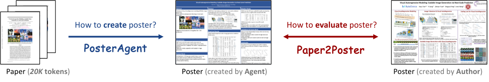
图 1：本文工作概览。我们针对科学海报生成中的两个核心挑战：左：如何从论文创作海报——我们提出 PosterAgent（第 4 节），一个把长上下文科学论文（20K+ 词元）转换为结构化视觉海报的框架；右：如何评价海报质量——我们提出 Paper2Poster 基准（第 3 节），它支持对智能体生成的海报与作者设计的海报进行系统比较。
To systematically evaluate poster generation, we propose the Paper2Poster Benchmark, the first benchmark and metric suite for this novel task. Our benchmark comprises recent conference papers paired with author-designed posters, along with a human-and-model evaluation protocol that measures (i) Visual Quality — how well the generated poster aligns visually with the human-designed version. (ii) Textual Coherence — the clarity and fluency of the poster’s language. (iii) Holistic Assessment — the overall aesthetic and informational quality, rated across six fine-grained dimensions by VLM as Judge. Notably, (iv) PaperQuiz — motivated by the poster’s role as a bridge between authors and readers, this metric evaluates how effectively the poster alone conveys core paper content by simulating diverse reader comprehension using VLMs to answer questions derived from the paper.
为系统评估海报生成，我们提出 Paper2Poster 基准，这是面向该新兴任务的第一个基准与指标套件。该基准由近期会议论文与作者设计的海报配对组成，并配有一套人机结合的评估协议，衡量以下方面：（i）视觉质量——生成海报与人类设计版本在视觉上的契合程度；（ii）文本连贯性——海报语言的清晰度与流畅度；（iii）整体评估——由 VLM 作为评判者在六个细粒度维度上对整体美学与信息质量打分；（iv）PaperQuiz——受海报作为作者与读者之间桥梁这一角色启发，该指标让 VLM 回答由论文生成的问题，以此模拟不同读者的理解过程，评估单张海报传达论文核心内容的有效性。
To tackle multimodal context compression in Paper2Poster, we introduce PosterAgent, a multi-agent framework that first globally organizes document content and then performs panel-level refinements—while weaving visual feedback into every stage. Starting with the Parser, we ingest the full paper PDF and transform it into an asset library of section-level text summaries and extracted figures and tables. Next, the Planner semantically matches each synopsis to its corresponding visual asset and generates a binary-tree layout, allocating panels by estimated content length while preserving reading order and spatial balance. Finally, the Painter–Commenter loop refines each panel: the Painter distills section-figure pairs into concise bullet points and renders draft panels via python-pptx code, and the Commenter—a VLM with zoom-in reference prompts—provides targeted feedback to correct text overflow and spatial alignment. This top-down, visual-in-the-loop design produces concise, coherent posters without manual tuning.
为解决 Paper2Poster 中的多模态上下文压缩问题，我们提出 PosterAgent——一个先对文档内容做全局组织、再执行面板级精修，并在每个阶段都融入视觉反馈的多智能体框架。流程从 Parser 开始：它读入完整的论文 PDF，将其转换为由章节级文本摘要与抽取出的图、表构成的素材库。接着，Planner 在语义上把每段概要与其对应的视觉素材匹配起来，并生成二叉树布局，依据估计的内容长度分配面板，同时保持阅读顺序与空间均衡。最后，Painter–Commenter 循环对每个面板进行精修：Painter 把「章节—图片」对提炼为简洁要点，并通过 python-pptx 代码渲染出面板草稿；Commenter 则是一个带有放大参考提示的 VLM，提供有针对性的反馈，用于纠正文字溢出与空间对齐问题。这种自顶向下、视觉在环的设计无需人工调参即可产出简洁连贯的海报。
Using Paper2Poster, we comprehensively evaluate human-designed (oracle) posters, state-of-the-art generative models (e.g., GPT-4o), and multi-agent solutions, revealing several key insights: (i) GPT-4o’s outputs, though visually appealing at first glance, suffer from noisy or incoherent text, yielding high perplexity and poor PaperQuiz performance; (ii) VLM-based judging shows the primary aesthetic bottleneck is Engagement rather than informational content, since human posters convey meaning predominantly through visual semantics; (iii) PaperQuiz proves a reliable metric—VLM reader scores correlate closely with human evaluations, and more capable VLMs achieve higher scores on well-designed posters; and (iv) our Paper2Poster pipeline, built on a fully open-source toolbox (e.g., Qwen-2.5-VL-7B), surpasses existing GPT-4o–based multi-agent approaches on nearly all metrics while consuming fewer tokens. Our findings illuminate pathways for the next generation of models and agent systems aimed at fully automated poster generation.
借助 Paper2Poster，我们全面评估了人类设计（Oracle）的海报、当前最先进的生成模型（如 GPT-4o）以及多智能体方案，得到若干关键发现：（i）GPT-4o 的输出虽然乍看之下赏心悦目，却存在文本噪声与不连贯问题，困惑度高、PaperQuiz 表现差；（ii）基于 VLM 的评判显示，主要的美学瓶颈在于吸引力而非信息内容，因为人类设计的海报主要通过视觉语义传达含义；（iii）PaperQuiz 被证明是可靠指标——VLM 读者得分与人类评价高度相关，能力更强的 VLM 在设计良好的海报上得分更高；（iv）基于全开源工具箱（如 Qwen-2.5-VL-7B）构建的 Paper2Poster 流程，在几乎所有指标上都超过了现有的基于 GPT-4o 的多智能体方法，同时词元消耗少 。这些发现为下一代全自动海报生成模型与智能体系统指明了方向。
Recent advances in multi-modal learning have driven significant progress in automating visual design tasks. These tasks commonly fall into two broad categories: (i) Text-rich Image Generation. Tasks such as poster generation [3, 17, 11, 33] have greatly benefited from diffusion-based approaches [11, 10, 31], which enable the synthesis of detailed visuals conditioned on natural language descriptions. However, ensuring the quality and fidelity of embedded textual content via an end-to-end pixel generative model remains a major challenge, as generated text at the pixel level appears blurry and hard to read. (ii) Complex Visual Layouts. Tasks like website designing [7, 27, 16, 23] or slide generation [37, 2, 8, 18, 26, 29] involve intricate visual structures and require integrating diverse components. To handle such complexity, mainstream approaches [37, 5] often employ agentic workflows that rely heavily on code generation and tool usage to assemble complete visual outputs. In contrast, our Paper2Poster addresses a more demanding yet highly practical setting: scientific visual design based on academic papers. This involves long-context, interleaved multi-modal, inputs and outputs, posing substantial challenges in both effectiveness and computational efficiency.
多模态学习的近期进展推动了视觉设计自动化任务的显著进步。这类任务通常分为两大类：（i）富文本图像生成。海报生成 [3, 17, 11, 33] 等任务极大受益于基于扩散的方法 [11, 10, 31]，后者能以自然语言描述为条件合成细节丰富的视觉内容。然而，通过端到端像素生成模型来保证嵌入文本的质量与保真度仍是一大挑战，因为像素级生成的文字往往模糊难辨。（ii）复杂视觉布局。网页设计 [7, 27, 16, 23] 或幻灯片生成 [37, 2, 8, 18, 26, 29] 等任务涉及复杂的视觉结构，需要整合多种组件。为应对这种复杂性，主流方法 [37, 5] 常采用高度依赖代码生成与工具调用的智能体工作流来组装完整的视觉产出。相比之下，我们的 Paper2Poster 面向一个要求更高但极具实用价值的场景：基于学术论文的科学视觉设计。它涉及长上下文、图文交错的输入与输出，在有效性与计算效率两方面都带来巨大挑战。
Recent progress has revealed the promising potential of LLMs beyond pure language understanding. Techniques such as ReAct [36, 35] have demonstrated that LLMs can serve as autonomous agents, capable of solving complex tasks through step-by-step reasoning and dynamic interaction via coding [32, 34], API function calling [25, 15], or UI interface interaction [13, 22, 19]. Despite these advances, general-purpose agents still struggle with professional tasks [12] as they require serious, accurate interaction and domain-specific knowledge. One closely related application is slide automation [5, 37], where agents translate brief textual queries into executable Python code (e.g., via python-pptx) to render presentation slides. However, our Paper2Poster setting is significantly more challenging: instead of a text prompt, we take full-length academic papers as inputs and generate compact, well-structured posters as output. This novel task requires careful design of both evaluation metrics and an effective, practical automation workflow.
近期进展揭示了 LLM 在纯语言理解之外的巨大潜力。ReAct [36, 35] 等技术表明，LLM 可以充当自主智能体，通过逐步推理以及借助编码 [32, 34]、API 函数调用 [25, 15] 或界面交互 [13, 22, 19] 进行动态交互来解决复杂任务。尽管如此，通用智能体在专业任务上仍然吃力 [12]，因为这些任务需要严谨准确的交互与领域知识。一个密切相关的应用是幻灯片自动化 [5, 37]，其中的智能体把简短的文本查询转换为可执行的 Python 代码（例如通过 python-pptx）来渲染演示文稿。然而，我们的 Paper2Poster 场景难度明显更高：输入不再是文本提示，而是完整的学术论文，输出则是紧凑且结构良好的海报。这一新兴任务需要在评估指标与高效实用的自动化工作流两方面都做精心设计。
Given a scientific paper composed of interleaved text, figures, and tables, the goal is to automatically generate a single-page academic poster that faithfully conveys the paper’s core content in a visually coherent and spatially efficient format. This task presents several unique challenges: a. Long-Context Long-Horizon Task: Scientific papers span multiple pages and thousands of words. Summarizing key insights while preserving coherence demands hierarchical understanding and selective abstraction. The complexity further necessitates long-horizon reasoning and multiple iterative interactions, making the task especially challenging. b. Interleaved Multimodal Inputs: Papers integrate numerous figures, tables, and charts, each semantically linked to the surrounding text. Successful poster generation demands the ability to extract, interpret, and align these multimodal elements in a contextually appropriate manner. c. Layout-Aware Multimodal Outputs: Unlike tasks focused solely on text (e.g., blog) or vision, poster generation requires producing interleaved text–image outputs within a constrained spatial layout. This necessitates joint reasoning over language, visual content, and layout to prevent overflow, imbalance, and logical misalignment.
给定一篇由文字、图片与表格交错构成的科学论文，目标是自动生成一页学术海报，以视觉连贯、空间高效的形式忠实传达论文的核心内容。该任务带来若干独特挑战：a. 长上下文、长时程任务：科学论文往往长达数页、数千词，在保持连贯的前提下概括关键洞见，需要层次化的理解与有选择性的抽象；其复杂性还要求长时程推理与多轮迭代交互，使任务尤为棘手。b. 交错的多模态输入：论文包含大量图表，每张都与周围文字存在语义关联，成功的海报生成需要以符合语境的方式抽取、解读并对齐这些多模态元素。c. 具有版面意识的多模态输出：与只关注文本（如博客）或只关注视觉的任务不同，海报生成需要在受限的空间版式中产出图文交错的结果，这就要求对语言、视觉内容与版式进行联合推理，以避免溢出、失衡与逻辑错位。
Data Source. We focus exclusively on AI papers for three key reasons: (1) they are relatively recent and undergo rigorous peer review, ensuring high scientific quality; (2) they offer diverse content across subfields—such as image-rich computer vision, text-centric NLP, and theory papers with numerous equations—providing a broad range of input modalities. To support this, we adopt the PosterSum dataset [24], which contains a large collection of paper–poster pairs from recent AI conferences including ICML, NeurIPS, and ICLR (2022–2024). We specifically use the test split to reduce the risk of overlap with training data.
数据来源。我们只关注 AI 领域的论文，原因有三：（1）这些论文相对较新且经过严格同行评审，科学质量有保障；（2）其内容覆盖多个子领域——如图片丰富的计算机视觉、以文本为中心的 NLP，以及公式众多的理论论文——提供了广泛的输入模态。为此，我们采用 PosterSum 数据集 [24]，它包含来自 ICML、NeurIPS、ICLR（2022—2024）等近期 AI 会议的大量论文—海报对。我们专门使用其测试集划分，以降低与训练数据重叠的风险。
Diverse Sampling. Based on the initial candidate set, we apply two filtering criteria to curate high-quality data: (1) Length Control: We deliberately include longer papers, including supplementary material, selecting PDFs that exceed pages and extend up to pages. (2) Latest Version: We manually retrieve the most recent PDF version for each paper to ensure the dataset reflects final camera-ready submissions. From the filtered set, we construct the final Paper2Poster dataset consisting of 100 paper–poster pairs, stratified by publication year to ensure temporal balance: pairs from 2022, from 2023, and from 2024. To further enhance diversity, we also stratify by source venue—selecting papers from NeurIPS, from ICML, and from ICLR, ensuring broad coverage across these leading conferences.
多样化采样。在初始候选集基础上，我们施加两条筛选标准以构建高质量数据：（1）长度控制：我们有意纳入更长的论文（含补充材料），选取页数超过 页、最多达 页的 PDF。（2）最新版本：我们人工检索每篇论文的最新 PDF 版本，以确保数据集反映的是最终的正式发表稿。从筛选后的集合中，我们构建了最终的 Paper2Poster 数据集，包含 100 组论文—海报对，并按发表年份分层以保证时间上的均衡：2022 年 组、2023 年 组、2024 年 组。为进一步提升多样性，我们还按来源会议分层——从 NeurIPS 选取 篇、从 ICML 选取 篇、从 ICLR 选取 篇，确保对这些顶级会议有广泛覆盖。
Data Statistics. Overall, Paper2Poster comprises 100 paper-poster pairs spanning distinct topics across domains such as Computer Vision (), Natural Language Processing (), and Reinforcement Learning (), ensuring comprehensive coverage across subfields. As illustrated in Fig. 2 (a-b), the input papers contain an average of words across pages, amounting to approximately tokens, with an average of figures per paper. In Fig. 2 (c-d), the corresponding author-designed posters include an average of words ( tokens) and figures. This reflects a textual compression ratio of approximately and a figure reduction ratio of about from paper to poster.
数据统计。总体而言，Paper2Poster 包含 100 组论文—海报对，覆盖 个不同主题，涉及计算机视觉（）、自然语言处理（）与强化学习（）等领域，保证了对各子领域的全面覆盖。如图 2（a-b）所示，输入论文平均包含 个词、分布在 页上，约为 个词元，平均每篇有 张图。图 2（c-d）显示，对应的作者设计海报平均包含 个词（ 个词元）与 张图。这意味着从论文到海报的文本压缩比约为 ，图片削减比约为 。
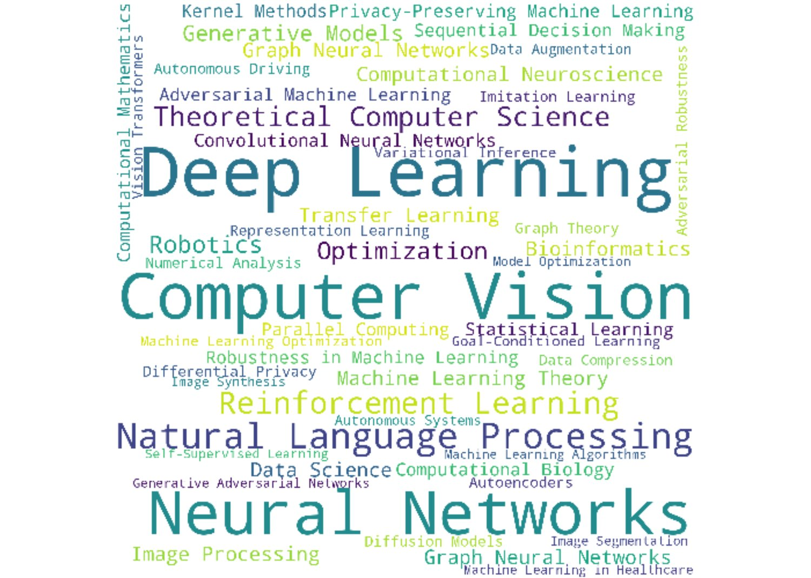
(a) 主题词云
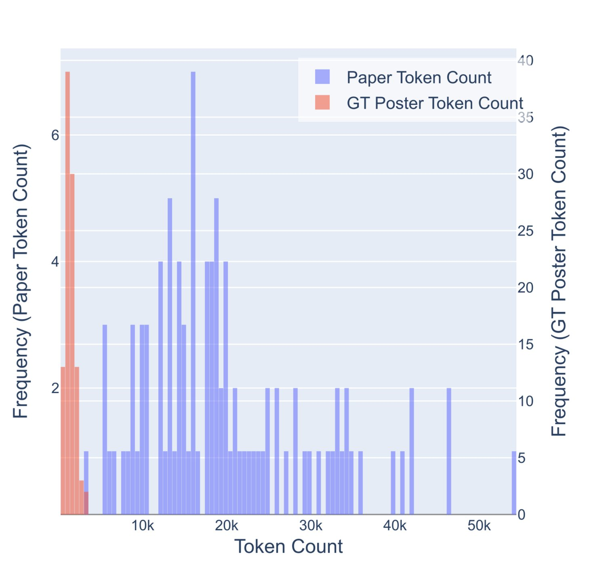
(b) 词元的
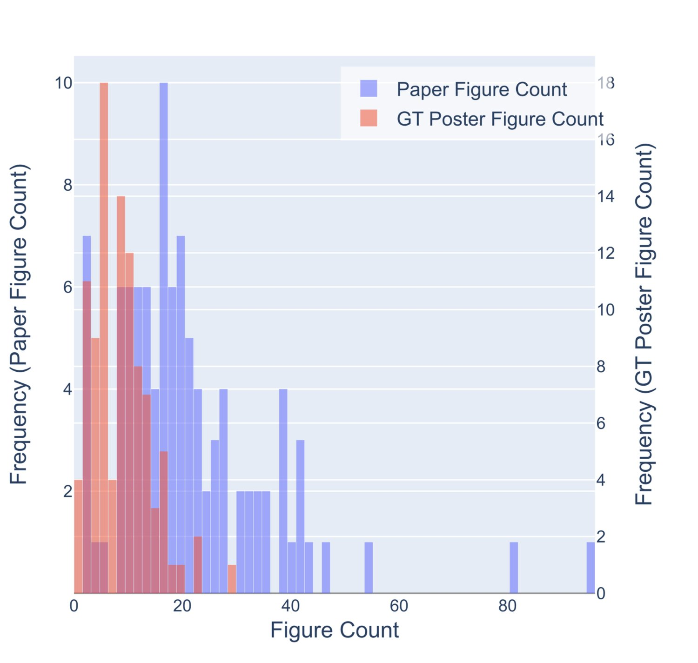
(c) 图片的
图 2：Paper2Poster 的数据统计。(a) 展示研究主题多样性的词云。(b) 输入论文与作者提供海报的词元统计与图片数量统计。总体而言，这些统计说明 Paper2Poster 是一项多模态上下文压缩任务，需要对文本与视觉内容都做有效抽象。
To systematically measure the quality of generated posters, we establish a comprehensive evaluation framework that covers four essential dimensions as shown in Fig. 3 (left): (i) visual quality, (ii) textual coherence, (iii) quality assessment via VLM (i.e.,VLM-as-judge), and notably our proposed (iv) PaperQuiz which measures how effectively the poster conveys the paper’s core knowledge.
为系统衡量生成海报的质量，我们建立了一个覆盖四个基本维度的综合评估框架，如图 3（左）所示：（i）视觉质量，（ii）文本连贯性，（iii）基于 VLM 的质量评估（即 VLM-as-Judge），以及我们特别提出的（iv）PaperQuiz，用于衡量海报传达论文核心知识的有效性。
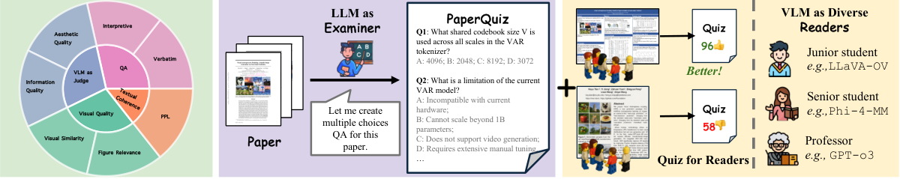
图 3：左：Paper2Poster 评估框架概览。中：我们使用 LLM（o3）从每篇论文自动生成多选题，构成我们的 PaperQuiz 评估。右：在 PaperQuiz 中，我们让代表不同专业水平（如学生、教授）的多个 VLM 阅读每张生成的海报并作答，以此模拟多位读者。平均得分最高的海报被认为在传达论文内容上最为有效。
(i) Visual Quality. The visual presentation of a poster directly impacts reader comprehension and engagement. To evaluate visual quality from both global and local perspectives, we employ two metrics: (1) We measure "Visual Similarity" between the generated and the author-designed posters as ground-truth using CLIP image embeddings. This metric captures high-level visual–textual correspondence to assess whether outputs are truly "poster-like" rather than article-like layouts, though it is not a direct measure of aesthetic quality. This approach is favored over traditional distribution-based metrics (such as FID used in prior works [5, 37]), as it assesses instance-level semantic consistency. (2) We measure "Figure Relevance" by computing the average CLIP similarity between figures and their corresponding text sections in the original paper. This metric ensures figures are contextually appropriate and effectively integrated, assigning zero relevance to posters lacking visual content. For both metrics, we employ AltCLIP [4] due to its robustness in handling longer sequences alignment. We complement CLIP with aspect-level VLM-as-Judge evaluation (see below) to capture fine-grained visual quality that CLIP may not fully capture. Detailed definition of both metrics can be found in Appendix F.1.
（i）视觉质量。海报的视觉呈现直接影响读者的理解与投入。为从全局与局部两个角度评估视觉质量，我们采用两项指标：（1）以作者设计的海报为真值，用 CLIP 图像嵌入衡量生成海报与其之间的「视觉相似度」。该指标捕捉高层视觉—文本对应关系，用于判断输出是否真正「像海报」而非像论文排版，但它并不直接度量美学质量。我们之所以偏好该指标，是因为相较于先前工作 [5, 37] 使用的 FID 等基于分布的指标，它能评估实例级的语义一致性。（2）我们通过计算图中每张图片与原文对应章节文本之间的平均 CLIP 相似度来衡量「图片相关性」，确保图片在语境上恰当且被有效整合，对缺少视觉内容的海报则记为零相关性。两项指标均使用 AltCLIP [4]，因其在处理较长序列对齐时更为稳健。我们还以层面级的 VLM-as-Judge 评估（见下文）作为 CLIP 的补充，以捕捉 CLIP 可能无法完全反映的细粒度视觉质量。两项指标的详细定义见附录 F.1。
(ii) Textual Coherence. Clear and fluent text is essential for poster readability and comprehension. We therefore quantify textual coherence by computing the standard "Perplexity" (PPL) of the entire poster text under Llama-2-7b-hf. Lower PPL indicates more predictable, coherent language. Importantly, PPL assesses fluency and local coherence rather than semantic similarity to a reference, making it well-suited for our abstractive poster generation task where content should be reorganized and compressed rather than copied. A detailed definition is provided in Appendix F.2.
（ii）文本连贯性。清晰流畅的文本对海报的可读性与可理解性至关重要。因此，我们通过在 Llama-2-7b-hf 下计算整张海报文本的标准「困惑度」（PPL）来量化文本连贯性，PPL 越低表示语言越可预测、越连贯。重要的是，PPL 衡量的是流畅性与局部连贯性，而非与参考文本的语义相似度，因此非常适合我们的抽象式海报生成任务——在该任务中，内容应当被重组与压缩，而非照搬。详细定义见附录 F.2。
(iii) Holistic Assessment (VLM-as-Judge). To evaluate overall poster effectiveness in fine-grained dimension, we prompt a VLM (e.g., GPT-4o) as an automated judge by outputting score (–). For each poster image, the model assigns criterion-level scores: under “Aesthetic Score”—{Element Quality, Layout Balance, Engagement}, and under “Information Score”—{Clarity, Content Completeness, Logical Flow}. This direct, image-centric evaluation preserves fidelity to both visual design and content, while also capturing informativeness. It provides fine-grained feedback to guide future poster design. Full prompt templates and scoring protocols are detailed in Appendix F.3.
（iii）整体评估（VLM-as-Judge）。为在细粒度维度上评估海报的整体效果，我们提示一个 VLM（如 GPT-4o）充当自动评判者，输出 – 的分数。对每张海报图像，模型给出 项准则级评分：「美学分数」下有 项——{元素质量、版面均衡、吸引力}，「信息分数」下有 项——{清晰度、内容完整性、逻辑流}。这种直接以图像为中心的评估既保有了对视觉设计与内容的保真度，也兼顾了信息量，并能提供细粒度反馈以指导后续海报设计。完整的提示模板与评分协议详见附录 F.3。
(iv) PaperQuiz. Given the poster’s central role in communicating the content of its source paper—serving as a bridge between authors and readers—we design an evaluation protocol that simulates this communication scenario. As shown in Fig. 3 (middle), each paper PDF is first submitted to o3 as examiner to generate 100 multiple-choice questions per paper: 50 verbatim questions (directly answerable from the text, spanning 13 content aspects) and 50 interpretive questions (targeting high-level comprehension across 10 conceptual dimensions). Next, as illustrated in Fig. 3 (right), we present each poster image to six VLMs (both open- and closed-source), simulating a range of reader standards from casual to expert. These models then answer the quiz based solely on the poster content. By comparing their quiz scores across different poster variants, we identify which poster best conveys the original paper content. Given that a poster is a visual medium rather than plain text like a note, we further adjust the raw Quiz scores by incorporating a length-based penalty, resulting in a penalized score :
（iv）PaperQuiz。鉴于海报在传达其源论文内容、充当作者与读者之间桥梁的核心作用，我们设计了一套模拟这一交流场景的评估协议。如图 3（中）所示，每篇论文 PDF 先提交给 o3 作为出题人，为每篇论文生成 100 道多选题：50 道原文题（可直接从文本中作答，覆盖 13 个内容方面）与 50 道理解性题目（考查跨 10 个概念维度的高层理解）。接着，如图 3（右）所示，我们把每张海报图像呈现给六个 VLM（开源与闭源皆有），模拟从随意浏览到专家审阅的多种读者水准，这些模型仅依据海报内容作答。通过比较不同海报变体的测验得分，我们判断哪张海报最能传达原论文内容。鉴于海报是视觉媒介而非笔记那样的纯文本，我们进一步引入基于长度的惩罚，对原始测验得分 进行调整，得到惩罚后得分 ：
where denotes the total text length of the poster, and is the median text length of human-designed (ground-truth) posters. This penalty function is designed with three goals: (i) discourage overly long posters ( yields , losing the bonus), (ii) avoid harsh punishment (as , remains at , not approaching zero), and (iii) prevent rewarding extreme brevity (when , the bonus is capped at , so further shortening provides no additional gain). By anchoring the penalty to human-designed poster lengths, we ensure that posters are neither excessively verbose nor sacrifice informative content for brevity. Further details on metric design, question curation, evaluation workflow, and scoring procedures can be found in Appendix F.4.
其中 表示海报的文本总长度， 为人类设计（真值）海报文本长度的中位数。该惩罚函数的设计有三个目标：（i）抑制过长的海报（ 时得到 ，失去奖励）；（ii）避免惩罚过重（当 时， 仍保持在 ，不会趋近于零）；（iii）防止奖励极端简短（当 时，奖励上限为 ，继续缩短不再带来额外收益）。通过把惩罚锚定在人类设计海报的长度上，我们确保海报既不过于冗长，也不为追求简短而牺牲信息量。有关指标设计、题目构建、评估流程与评分步骤的更多细节见附录 F.4。
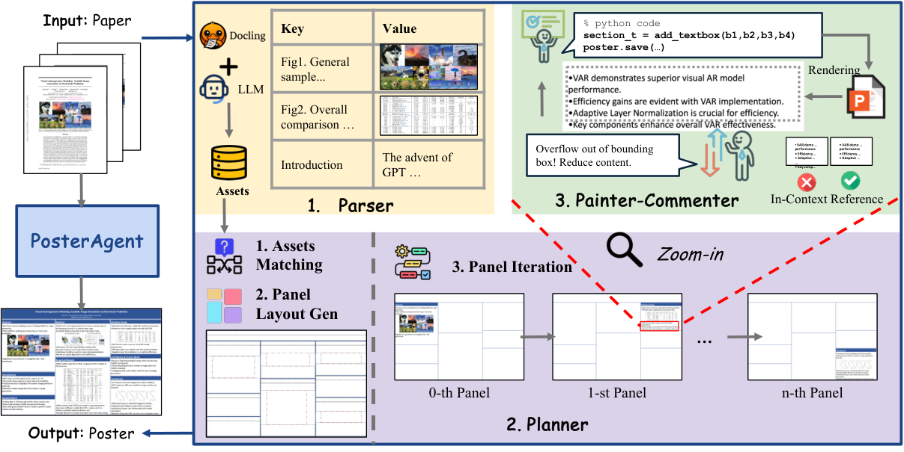
图 4：PosterAgent 流程示意。给定输入论文，PosterAgent 通过三个模块生成结构化学术海报：1. Parser：结合工具与基于 LLM 的摘要抽取关键文本与视觉素材，形成结构化素材库。2. Planner：匹配素材并排布为连贯的版面，通过放大操作迭代生成面板。3. Painter–Commenter：Painter 生成面板级要点内容与可执行代码并渲染视觉输出，而带有上下文参考的 VLM 作为 Commenter 提供反馈，以保证版面连贯并防止内容溢出。
Overview. Identifying the challenges posed by the Paper2Poster, we formulate it as a problem of multimodal context compression, and introduce PosterAgent, a multi-agent pipeline that adopts a “Top-down” design philosophy: it first globally restructures the entire document into concise, coherent sections, followed by local refinements for fine-grained, panel-level control. As shown in Fig. 4. The pipeline consists of three key components: 1. Parser: Extracts key textual and visual content by tools and LLM-based summarization to build an asset library. 2. Planner: Aligns assets and arranges them into coherent layouts, generating panels iteratively with a zoom-in mechanism. 3. Painter–Commenter: The Painter produces panel-level bullet points and executable code for rendering, while a VLM as Commenter—ensures layout coherence and avoids overflow.
概览。在识别 Paper2Poster 所带来的挑战后，我们把它形式化为一个多模态上下文压缩问题，并提出 PosterAgent——一个采用「自顶向下」设计理念的多智能体流程：先把整篇文档全局重构为简洁连贯的章节，再进行局部精修以实现细粒度的面板级控制。如图 4 所示，该流程由三个关键组件构成：1. Parser：通过工具与基于 LLM 的摘要抽取关键文本与视觉内容，构建素材库。2. Planner：对齐素材并把它们排布为连贯的版面，借助放大机制迭代生成面板。3. Painter–Commenter：Painter 产出面板级要点与用于渲染的可执行代码，而作为 Commenter 的 VLM 则负责保证版面连贯并避免溢出。
Given a paper, the first step is to globally organize the information into a structured format to support subsequent processing. This is handled by the Parser, which performs a coarse-grained compression by ingesting the raw PDF and producing an asset library across two modalities: (1) Text assets that capture the document hierarchy like human first glance focus on section heading—each key is a section heading and the associated value a paragraph-level synopsis; (2) Visual assets built in parallel, where figure or table captions serve as keys and the extracted image files are stored as values. We leverage Marker[21] and Docling[14] to convert each page into Markdown, which is then processed by an LLM to generate a structured, JSON-like outline. This transformation compresses the raw text into a compact asset library that preserves essential semantics while significantly reducing size, enabling more efficient downstream iteration and layout generation.
给定一篇论文，第一步是把信息全局组织为结构化格式，以支撑后续处理。这一步由 Parser 完成，它通过读取原始 PDF 进行粗粒度压缩，产出覆盖两种模态的素材库：（1）文本素材，捕捉文档的层次结构——如同人类第一眼会先关注章节标题——其中每个键是章节标题，对应的值是段落级概要；（2）并行构建的视觉素材，以图或表的标题为键，以抽取出的图像文件为值。我们借助 Marker [21] 与 Docling [14] 把每一页转换为 Markdown，再由 LLM 处理生成结构化的、类 JSON 的大纲。这一转换把原始文本压缩成紧凑的素材库，在保留关键语义的同时显著减小体积，使下游的迭代与版面生成更为高效。
With the visual and text assets collected by the Parser, the next step is to select the relevant content and begin constructing the poster. Rather than generating the entire poster in one shot, we emphasize the importance of layout configuration and adopt an iterative, section-by-section completion process—mirroring how humans typically start with a template and sequentially fill in each section.
在 Parser 收集到视觉与文本素材之后，下一步是选取相关内容并开始构建海报。我们没有选择一次性生成整张海报，而是强调版面配置的重要性，采用逐章节迭代完成的流程——这与人类通常先拿一个模板、再依次填充各部分的做法一致。
Asset matching. This step aims to associate visual assets with corresponding textual content—for example, matching a teaser image to the introduction paragraph. We employ an LLM to semantically align each visual asset with its most relevant section from the asset library, resulting in a set of pairs.
素材匹配。这一步旨在把视觉素材与相应的文本内容关联起来，例如把一张 teaser 图匹配到引言段落。我们用一个 LLM 在语义上把每个视觉素材与素材库中最相关的章节对齐，得到一组 对。
Layout generation. An essential step is determining the panel-level layout, which requires precise absolute coordinates while accounting for the relative informativeness of each section. We found that directly predicting numerical coordinates using an LLM was unstable. Therefore, we adopt the binary-tree layout strategy [30], which reliably translates hierarchical constraints into panel bounding boxes by estimating content length (e.g.,, word number, figure size), maintaining reading order, and preserving aspect ratio—ensuring each poster section corresponds to a well-defined panel.
版面生成。确定面板级版面是必不可少的一步，它需要精确的绝对坐标，同时还要考虑每个章节的相对信息量。我们发现，用 LLM 直接预测数值坐标并不稳定。因此，我们采用二叉树布局策略 [30]，它通过估计内容长度（如字数、图片尺寸）把层次约束可靠地转换为面板边界框，并保持阅读顺序与宽高比，从而确保海报的每个章节都对应一个定义明确的面板。
Panel iteration. Once the paper layout is configured, the next stage is to populate each panel with content. To ensure precise control, the Planner iterates over each section’s synopsis and condenses it into concise, hierarchically structured bullet points—creating a compact format well-suited for poster panels. Inspired by how humans design posters—initially filling in content and iteratively refining it based on visual feedback—we introduce the Painter-Commenter loop (Sec. 4.3), which mimics this process while maintaining visual clarity and appeal. After all panels undergo this process, the finalized poster is produced.
面板迭代。版面配置完成后，下一步是向每个面板填充内容。为保证精确控制，Planner 遍历每个章节的概要，将其压缩为层次分明的简洁要点——这种紧凑格式非常适合海报面板。受人类设计海报方式的启发——先填入内容，再依据视觉反馈迭代精修——我们引入 Painter-Commenter 循环（第 4.3 节）来模拟这一过程，同时保持视觉上的清晰与美感。所有面板都经历这一流程之后，最终海报即告生成。
For each panel, the Painter converts its asset pair i.e., into executable code instructions and invokes the runtime environment to render a draft panel image. Particularly, the Painter comprises two modules: (i) an LLM that ingests the section synopsis and distills it into a concise set of bullet points, and (ii) a deterministic code generator that leverages the python-pptx library together with predefined helper functions to generate presentation code, which is subsequently executed and rendered into an image of the current panel.
对每个面板，Painter 把其素材对（即 ）转换为可执行的代码指令，并调用运行环境渲染出面板草稿图像。具体地，Painter 由两个模块组成：（i）一个 LLM，它读取章节概要并将其提炼为一组简洁要点；（ii）一个确定性的代码生成器，它利用 python-pptx 库与预定义的辅助函数生成演示文稿代码，随后执行该代码并把当前面板渲染为图像。
However, in practice, a single pass rarely produces a flawless panel. To address this, we pair the Painter with a Commenter—a VLM that evaluates the quality of the rendered panel image. While VLMs are promising, they often hallucinate in visual design tasks, leading to unreliable judgments. To mitigate this, we employ a Zoom-in strategy that focuses attention on the panel region. Additionally, we enhance the Commenter with an in-context reference prompt containing two examples: one with severe overflow and one with an ideal layout. Guided by these references, the Commenter provides targeted visual feedback—such as “overflow,” “too blank,” or “good to go”—which informs the Painter’s next revision. This loop continues until the Commenter signals success or a maximum number of iterations is reached, ensuring each panel is accurate, readable, and visually well-balanced.
然而在实践中，一次生成很少能得到完美无瑕的面板。为此，我们为 Painter 配上 Commenter——一个评估渲染面板图像质量的 VLM。虽然 VLM 前景可观，但它们在视觉设计任务中常产生幻觉，导致判断不可靠。为缓解这一点，我们采用 Zoom-in（放大）策略，把注意力集中在面板区域上。此外，我们还用一个包含两个示例的上下文参考提示来增强 Commenter：一个示例存在严重溢出，另一个则是理想的版面。在这些参考的引导下，Commenter 给出有针对性的视觉反馈——如「溢出」「过于空白」或「可以了」——供 Painter 下一轮修改参考。该循环持续进行，直到 Commenter 判定成功或达到最大迭代次数，从而保证每个面板都准确、可读且视觉均衡。
We evaluate four categories of baselines: (i) Oracle methods, which serve as upper bounds—"Paper" (the original PDF with maximum informativeness) for content fidelity, and "GT Poster" (the author-designed poster from Paper2Poster) as the best possible presentation in terms of human understanding and layout quality; (ii) End-to-end methods, where GPT-4o directly generates posters either through text-based rendering—"4o-HTML" (Markdown-to-HTML)—or image generation—"4o-Image" (poster graphics produced via GPT-4o’s web interface); (iii) Multi-agent workflows, which decompose the task using specialized toolkits—"OWL"[6], a general-purpose PDF-to-HTML converter, and "PPTAgent"[37], a Python-pptx-based slide generator, where candidate posters are selected via manual inspection; (iv) PosterAgent, our proposed approach—PosterAgent-4o uses GPT-4o for both internal LLM and VLM commenter, while PosterAgent-Qwen is a purely open-source solution, employs Qwen-2.5-7B for text generation and Qwen-2.5-VL-7B for commenter. Additional backbones are evaluated to study the generalizability of our method, which is detailed in Appendix E.4.
我们评估四类基线：（i）Oracle 方法，用作上限——「Paper」（信息量最大的原始 PDF）用于衡量内容保真度，「GT Poster」（Paper2Poster 中作者设计的海报）代表在人类理解与版面质量上可能达到的最佳呈现；（ii）端到端方法，由 GPT-4o 直接生成海报，或通过基于文本的渲染——「4o-HTML」（Markdown 转 HTML）——或通过图像生成——「4o-Image」（经 GPT-4o 网页界面生成的海报图）；（iii）多智能体工作流，借助专门的工具箱分解任务——「OWL」[6] 是通用的 PDF 转 HTML 转换器，「PPTAgent」[37] 是基于 Python-pptx 的幻灯片生成器，其候选海报由人工检视挑选；（iv）PosterAgent，即我们提出的方法——PosterAgent-4o 在内部 LLM 与 VLM 评论器上均使用 GPT-4o，而 PosterAgent-Qwen 是纯开源方案，采用 Qwen-2.5-7B 生成文本、Qwen-2.5-VL-7B 担任评论器。我们还评估了其他骨干模型以考察本方法的泛化性，详见附录 E.4。
Visual Quality & Text Coherence. In the left part of Tab. 1, we evaluate visual quality and textual coherence. Interestingly, while 4o-Image achieves the highest visual similarity, it also records the worst perplexity, suggesting that although the generated posters may appear visually appealing at first glance, they often contain noisy or incoherent text. As expected, the original paper performs best in terms of textual coherence. Notably, the author-designed poster (GT) still shows relatively high PPL, indicating that authors often prioritize visual appeal and reader engagement by conveying information through visual rather than textual means. Our PosterAgent achieves the highest figure relevance compared to PPTAgent,
视觉质量与文本连贯性。表 1 左侧评估了视觉质量与文本连贯性。有意思的是，4o-Image 虽然取得了最高的视觉相似度，其困惑度却也最差，这说明生成的海报可能乍看赏心悦目，实则常含噪声或不连贯的文本。不出所料，原始论文在文本连贯性上表现最佳。值得注意的是，作者设计的海报（GT）仍呈现相对较高的 PPL，表明作者往往优先追求视觉吸引力与读者投入，通过视觉而非文字手段传达信息。相比 PPTAgent，我们的 PosterAgent 取得了最高的图片相关性，
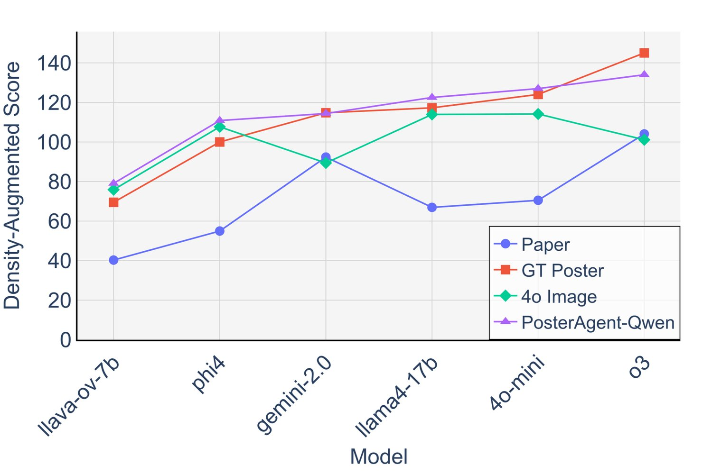
图 5：不同阅读者 VLM（横轴）在各类海报（图例线条）上的 PaperQuiz 平均分。完整模型名称见附录表 3。
primarily due to our visual-semantic-aware asset library construction and asset matching. It also ranks second in visual similarity, closely following the human-designed poster. Above results highlight that each metric captures only a specific aspect of quality and has its limitations. Therefore, we turn to the VLM-as-Judge and PaperQuiz next.
这主要归功于我们具备视觉语义感知的素材库构建与素材匹配。它在视觉相似度上也位列第二，紧随人类设计的海报。上述结果表明，每项指标只刻画质量的某个侧面，各有局限，因此我们转向 VLM-as-Judge 与 PaperQuiz。
| Model | Vis. quality & Txt. coherence | VLM-as-Judge | ||||||||||
| Vis. Sim. | PPL | Fig. Rel. | Aesthetic score | Information score | Overall | |||||||
| Element | Layout | Engage. | Avg. | Clarity | Content | Logic | Avg. | |||||
| Oracle methods | ||||||||||||
| Paper | 0.53 | 4.60 | 0.22 | 4.05 | 3.89 | 2.80 | 3.58 | 4.00 | 4.68 | 3.98 | 4.22 | 3.90 |
| GT Poster | 1.00 | 11.26 | 0.21 | 4.07 | 3.90 | 2.70 | 3.56 | 4.09 | 3.96 | 3.89 | 3.98 | 3.77 |
| End-to-end methods | ||||||||||||
| 4o-HTML | 0.52 | 9.86 | – | 3.53 | 3.82 | 2.72 | 3.36 | 3.94 | 3.64 | 3.47 | 3.68 | 3.52 |
| 4o-Image | 0.76 | 77.13 | 0.21 | 2.93 | 3.02 | 2.75 | 2.90 | 1.05 | 2.04 | 2.22 | 1.77 | 2.33 |
| Multi-Agent methods | ||||||||||||
| OWL-4o | 0.54 | 11.46 | – | 2.76 | 3.62 | 2.56 | 2.98 | 3.92 | 2.89 | 3.36 | 3.39 | 3.19 |
| PPTAgent-4o | 0.50 | 6.20 | 0.16 | 2.49 | 3.05 | 2.45 | 2.66 | 2.05 | 1.26 | 1.38 | 1.56 | 2.11 |
| PosterAgent variants | ||||||||||||
| PosterAgent-4o | 0.75 | 8.31 | 0.24 | 3.95 | 3.86 | 2.93 | 3.58 | 4.03 | 3.96 | 3.60 | 3.86 | 3.72 |
| PosterAgent-Qwen | 0.75 | 8.81 | 0.24 | 3.93 | 3.67 | 2.89 | 3.50 | 3.95 | 3.85 | 3.68 | 3.83 | 3.66 |
表 1：Paper2Poster 在四类基线上的详细评估，涵盖视觉质量与文本连贯性，以及用于细粒度评估的 VLM-as-Judge。理论上 Oracle 方法（论文或作者设计的海报）构成上限，实践中则是强有力的基线。
VLM as Judge Metrics. In the right part of Tab. 1, we conduct a comprehensive evaluation using a suite of metrics. We find that both the Paper and GT Poster achieve the highest aesthetic and information scores. In contrast, 4o-Image performs poorly in terms of information, aligning with findings from previous PPL studies. Overall, PosterAgent-4o achieves an average score of , reaching a level comparable to that of human-designed posters. Variants of PosterAgent that use GPT-4o as the visual commenter outperform those using Qwen2.5-VL-7B, highlighting the superior visual perception capabilities of 4o, particularly in panel refinement tasks such as preventing text overflow.
VLM 评判指标。表 1 右侧给出了一整套指标的综合评估。我们发现，Paper 与 GT Poster 在美学与信息分数上均最高。相比之下，4o-Image 在信息维度上表现较差，这与先前 PPL 研究的结论一致。总体上，PosterAgent-4o 的平均分为 ，达到了与人类设计海报相当的水平。以 GPT-4o 作为视觉评论器的 PosterAgent 变体优于使用 Qwen2.5-VL-7B 的变体，凸显了 4o 更强的视觉感知能力，在防止文字溢出等面板精修任务上尤为明显。
PPTAgent frequently fails to replace placeholder content or fill templates properly, leading to meaningless text or large blank areas, and thus receives low scores in both aesthetics and informativeness. Despite not generating images, 4o-HTML yields the highest aesthetic score among baselines, owing to its clean and structured layout. Overall, we found that the primary bottleneck in existing poster generation lies in Engagement, where all variants score below 3. In contrast, most variants achieve good Information scores, likely due to the robust long-context handling capabilities of GPT-4o. All PosterAgent variants—even those using Qwen2.5-7B—surpass baselines in information quality, demonstrating the effectiveness of our content planning and generation framework in mitigating limitations of less capable LLMs. Although PPTAgent is also powered by GPT-4o, its rigid template-filling mechanism often fails to properly populate content, leading to poor performance.
PPTAgent 常常无法替换占位内容或正确填充模板，导致出现无意义的文字或大片空白，因此在美学与信息性两方面得分都很低。尽管 4o-HTML 不生成图像，它凭借干净规整的版面在基线中取得了最高的美学分数。总体而言，我们发现现有海报生成的主要瓶颈在于吸引力，所有变体在该项上得分均低于 3。相比之下，多数变体的信息分数表现不错，这可能得益于 GPT-4o 强大的长上下文处理能力。所有 PosterAgent 变体——即便使用 Qwen2.5-7B——在信息质量上都超过了基线，说明我们的内容规划与生成框架能有效弥补较弱 LLM 的不足。虽然 PPTAgent 同样由 GPT-4o 驱动，但其僵化的模板填充机制常常无法正确填入内容，导致表现不佳。
PaperQuiz. As shown in Tab. 2, we draw several key observations: (i) Verbatim questions are generally more challenging than those assessing broader understanding and interpretation. (ii) Without textual brevity penalties, Paper achieves the highest overall score. When the penalty is applied, the GT Poster performs best. This highlights both the comprehensiveness of the full paper and the value of concise, well-designed posters. It also reinforces how the PaperQuiz setup reflects poster generation as a process of effective context compression, where careful condensation rather than sheer content volume is rewarded. (iii) GPT-4o supplies strong base ability. Its 4o-HTML variant outperforms OWL-4o, and even its purely visual 4o-Image generation surpasses PPTAgent-4o. Our proposed PosterAgent variants consistently achieve the best scores. (iv) Across all methods, performance on open-source reader models is consistently lower than on closed-source ones. This suggests that stronger perceptual ability correlates with better poster comprehension. (v) Notably, both 4o-HTML and OWL-4o, despite leveraging GPT-4o and generating lengthy, figure-free, blog-style outputs, are outperformed in raw accuracy by our PosterAgent-Qwen variant, even though they are exempt from brevity penalties. This result further affirms that PaperQuiz evaluates more than content volume; presentation quality matters. Our PosterAgent-Qwen surpasses more resource-intensive baselines despite relying on the relatively weaker Qwen-2.5-VL-7B, due to two key design choices: (a) a structured, multi-step compression process that enables even weaker LMs to distill information with minimal loss; and (b) a layout that presents information clearly and with a logical reading order, making it easy for VLM-based readers to locate and interpret key points, similar to how clear visual structure supports efficient comprehension for human poster readers.
PaperQuiz。如表 2 所示，我们得出若干关键观察：（i）原文题通常比考查广义理解与阐释的题目更难。（ii）在不施加文本简洁性惩罚时，Paper 的总分最高；施加惩罚后，GT Poster 表现最好。这既凸显了完整论文的全面性，也体现了简洁、设计良好的海报的价值，同时再次说明 PaperQuiz 的设置把海报生成反映为一个有效上下文压缩的过程——受到奖励的是精心凝练，而非单纯的内容堆砌。（iii）GPT-4o 提供了强大的基础能力：其 4o-HTML 变体优于 OWL-4o，即便是纯视觉的 4o-Image 生成也超过了 PPTAgent-4o；我们提出的 PosterAgent 变体则始终取得最佳成绩。（iv）在所有方法上，开源阅读模型的表现都始终低于闭源模型，说明更强的感知能力与更好的海报理解相关。（v）值得注意的是，4o-HTML 与 OWL-4o 虽都依托 GPT-4o，并生成冗长、无图、博客式的输出，却在原始准确率上被我们的 PosterAgent-Qwen 变体超越，即便后者并不豁免简洁性惩罚。这一结果进一步印证：PaperQuiz 衡量的不止是内容量，呈现质量同样重要。PosterAgent-Qwen 尽管依赖相对较弱的 Qwen-2.5-VL-7B，仍能胜过资源消耗更大的基线，原因有两项关键设计：（a）结构化的多步压缩流程，使较弱的 LM 也能在信息损失极小的情况下完成提炼；（b）清晰呈现信息并遵循逻辑阅读顺序的版面，便于基于 VLM 的读者定位与解读要点——正如清晰的视觉结构有助于人类读者高效理解海报一样。
| Raw Accuracy | Density-Augmented Score | |||||||||
| Model | Verbatim | Interpretive | Overall | V-Avg | I-Avg | Overall | ||||
| open-source | closed-source | V-Avg | open-source | closed-source | I-Avg | |||||
| Oracle methods | ||||||||||
| Paper | 51.45 | 82.95 | 67.20 | 48.48 | 81.61 | 65.05 | 66.12 | 72.69 | 70.34 | 71.52 |
| GT Poster | 51.75 | 58.10 | 54.93 | 49.19 | 77.55 | 63.37 | 59.15 | 103.56 | 120.00 | 111.78 |
| End-to-end methods | ||||||||||
| 4o-HTML | 52.45 | 48.00 | 50.23 | 50.78 | 75.14 | 62.96 | 56.59 | 95.72 | 120.55 | 108.13 |
| 4o-Image | 48.97 | 30.89 | 39.93 | 50.19 | 70.67 | 60.43 | 50.18 | 79.86 | 120.86 | 100.36 |
| Multi-Agent methods | ||||||||||
| OWL-4o | 47.87 | 31.96 | 39.92 | 49.94 | 74.38 | 62.16 | 51.04 | 78.69 | 122.91 | 100.80 |
| PPTAgent-4o | 39.63 | 11.99 | 25.81 | 36.22 | 37.15 | 36.68 | 31.25 | 51.62 | 73.37 | 62.49 |
| PosterAgent variants | ||||||||||
| PosterAgent-4o | 52.95 | 49.17 | 51.06 | 52.29 | 78.42 | 65.35 | 58.21 | 101.87 | 130.39 | 116.13 |
| PosterAgent-Qwen | 51.81 | 48.79 | 50.30 | 52.57 | 76.66 | 64.62 | 57.46 | 100.35 | 128.94 | 114.65 |
表 2：基于 6 种不同阅读者（含开源与闭源 VLM）在 Paper2Poster 上的 PaperQuiz 评估。原文题与理解性题目两种设置下均给出原始准确率与密度增强分数。实践中 Oracle 方法（论文或作者设计的海报）构成上限。
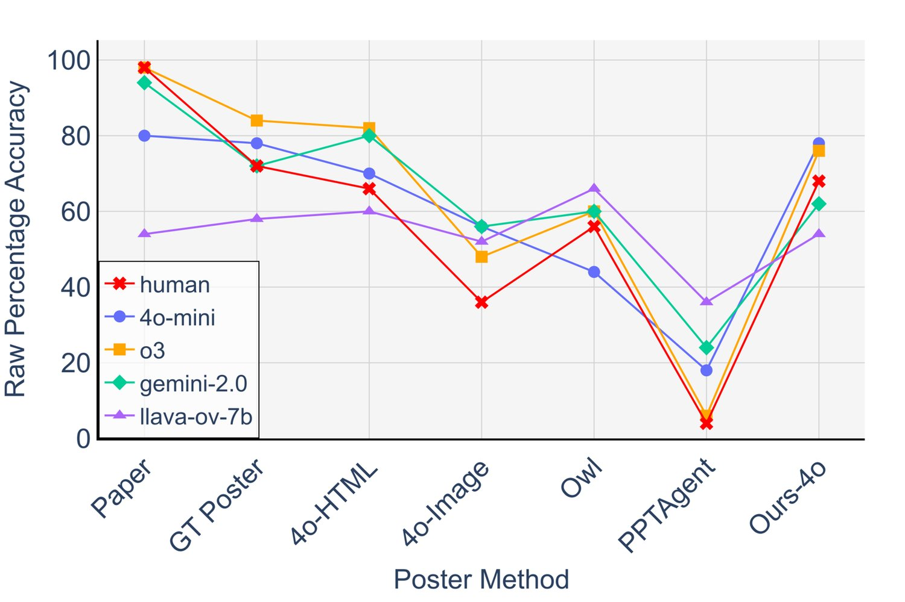
图 6：在人类评估子集上，各类海报（横轴）在不同阅读者（彩色线条）下的 PaperQuiz 平均分。
PaperQuiz readers comparison. In Fig. 5, we compare the PaperQuiz scores of different readers on four baseline posters. On GT and PosterAgent’s posters, we observe that as model reasoning capabilities improve, their ability to interpret structured content also increases, leading to higher QA accuracy. In contrast, this trend is not evident for 4o-Image and Paper, suggesting that more capable models benefit more from poster layouts and condensed information than from information-dense papers, thereby improving their comprehension and response quality.
PaperQuiz 阅读者比较。图 5 比较了不同阅读者在四种基线海报上的 PaperQuiz 得分。在 GT 与 PosterAgent 的海报上，我们观察到：随着模型推理能力增强，其解读结构化内容的能力也随之提升，从而带来更高的问答准确率。相比之下，这一趋势在 4o-Image 与 Paper 上并不明显，说明能力更强的模型从海报版面与凝练信息中获益，要多于从信息密集的论文中获益，进而提升了理解与回答的质量。
Human evaluation. To assess our method with human judgment, we recruited a PhD student to complete the PaperQuiz on randomly selected papers from the Paper2Poster dataset, covering baselines, ground-truth variants, and PosterAgent variants, following the setup in Section 5.1. Details of the human evaluation protocol are provided in Appendix G. Figure 6 demonstrates the average PaperQuiz scores across different types of posters (x-axis) for each reader (colored lines). PaperQuiz scores across different posters exhibit good consistency across both human and VLMs evaluations. This alignment supports the use of reader models as effective proxies to simulate human judgment.
人类评估。为以人类判断检验本方法，我们招募了一名博士生，在 Paper2Poster 数据集中随机选取的 篇论文上完成 PaperQuiz，覆盖 个基线、 个真值变体与 个 PosterAgent 变体，设置同第 5.1 节。人类评估协议的细节见附录 G。图 6 展示了各类海报（横轴）在每个阅读者（彩色线条）下的平均 PaperQuiz 得分。不同海报上的 PaperQuiz 得分在人类与 VLM 评估之间表现出良好的一致性，这一吻合支持了以阅读者模型作为模拟人类判断的有效代理。
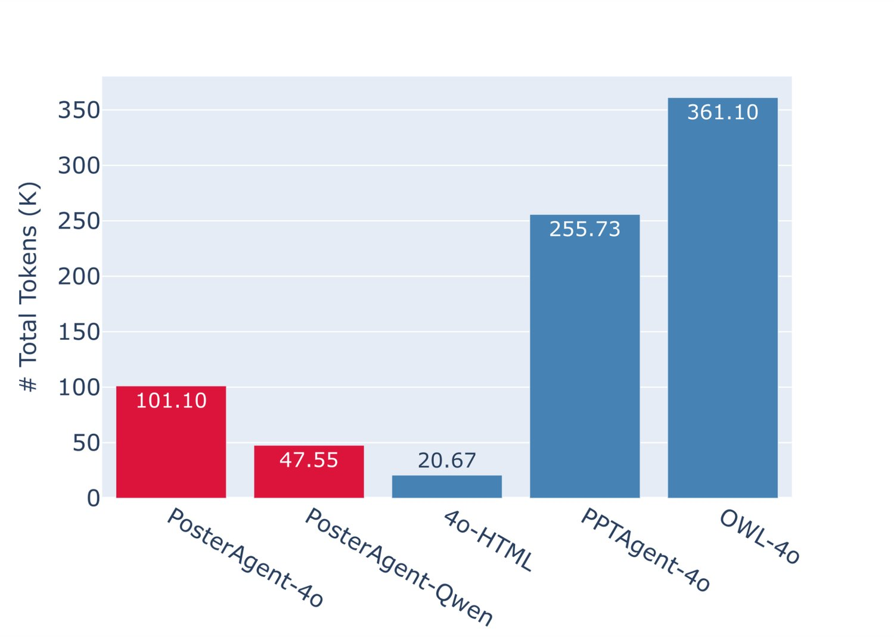
图 7：不同方法的平均词元消耗。细节见附录 E.1。
In Figure 8, we present a quantitative comparison across different poster baselines for a paper [20].
GPT-4o’s pixel-based generation produces visually acceptable layouts at first glance, but closer inspection (zoom-in region) reveals impaired text rendering, leading to poor readability of fine-grained details. 4o-HTML and OWL generate blog-like, text-dense posters that suffer from low visual readability. PPTAgent struggles with layout control, often resulting in missing panels. In contrast, our PosterAgent generates structurally coherent and readable posters, achieving the highest scores while using significantly fewer words than (c) and (f). However, there is still room for improvements compared to human-designed versions.
图 8 给出了针对论文 [20] 的不同海报基线之间的比较。GPT-4o 基于像素的生成乍看之下版面尚可，但细看（放大区域）会发现文字渲染受损，细粒度细节的可读性很差。4o-HTML 与 OWL 生成的海报类似博客、文本密集，视觉可读性偏低。PPTAgent 在版面控制上颇为吃力，常导致面板缺失。相比之下，我们的 PosterAgent 生成结构连贯、可读的海报，取得最高分数，同时用词显著少于 (c) 与 (f)。不过与人类设计的版本相比仍有改进空间。
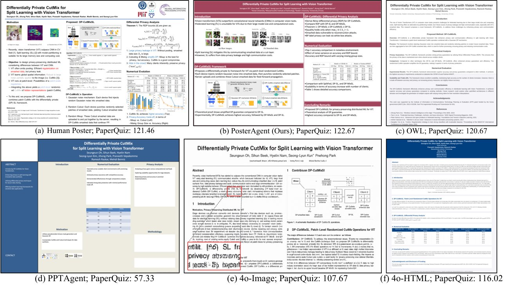
图 8：不同方法为论文生成的海报变体示意，包括 (a) 作者设计，(b) 我们的 PosterAgent，多智能体方法 (c) OWL [6] 与 (d) PPTAgent [37]，像素生成方法 (e) 4o-Image，以及网页生成方法 (f) 4o-HTML。我们给出了每种方法的 PaperQuiz 增强分数。
Figure 7 presents the average token cost per poster across different methods. Our PosterAgent achieves great token efficiency, using only (4o-based) and (Qwen-based) tokens—reducing cost by – compared to OWL-4o [6]. This translates to just for 4o and for Qwen per poster, highlighting its effectiveness. Additionally, through parallelization of panel generation, we further reduced runtime by 40.7%, making PosterAgent-4o-Parallel even more competitive in speed (see Append. E.1 for token details and Append. E.1.1 for runtime breakdown).
图 7 给出了不同方法生成每张海报的平均词元开销。我们的 PosterAgent 词元效率极高，仅需 （基于 4o）与 （基于 Qwen）个词元——相比 OWL-4o [6] 降低了 –。折合每张海报仅 （4o）与 （Qwen），足见其高效。此外，通过面板生成的并行化，我们进一步把运行时间缩短了 40.7%，使 PosterAgent-4o-Parallel 在速度上更具竞争力（词元细节见附录 E.1，运行时间分解见附录 E.1.1）。
We present a new benchmark, Paper2Poster, for poster generation from academic papers, and we highlight the challenges and limitations of current generative models or agents in handling long-context, layout-sensitive tasks. Our proposed solution, the PosterAgent framework, leverages structured parsing, hierarchical planning, and visual feedback to enhance generation quality significantly. PosterAgent not only narrows the performance gap with human-designed posters but also establishes a new efficiency standard, offering a practical and scalable approach to scientific communication.
我们提出了一个新的基准 Paper2Poster，用于从学术论文生成海报，并指出当前生成模型或智能体在处理长上下文、版面敏感任务时面临的挑战与局限。我们提出的解决方案 PosterAgent 框架，借助结构化解析、层次化规划与视觉反馈显著提升了生成质量。PosterAgent 不仅缩小了与人类设计海报之间的性能差距，也树立了新的效率标杆，为科学交流提供了一条实用且可扩展的路径。
This work was supported by the UKRI Turing AI Fellowship (EP/W002981/1); and by NSERC through a Discovery Grant, an Alliance Grant, and the Canada CIFAR AI Chairs program. Resources were provided, in part, by the Province of Ontario, the Government of Canada through CIFAR, and companies sponsoring the Vector Institute.
本工作得到 UKRI Turing AI Fellowship（EP/W002981/1）的资助，以及 NSERC 通过 Discovery Grant、Alliance Grant 与 Canada CIFAR AI Chairs 项目的支持。计算资源部分由安大略省政府、加拿大政府通过 CIFAR，以及赞助 Vector Institute 的企业提供。
Appendix
附录
We spot a limitation in the current design: the sequential execution of panel refinements constitutes the primary efficiency bottleneck. Each panel’s generate–revise cycle is structurally independent and could be parallelized, yet our implementation processes them serially to preserve modularity and output quality. As a result, end-to-end poster creation takes approximately 4.5 minutes per document—acceptable for isolated use but restrictive for large-scale or interactive workflows. Introducing panel-level parallelism is a clear avenue for future work, with the potential to dramatically reduce runtime and improve scalability in batch generation and real-time editing contexts.
我们注意到当前设计存在一处局限：面板精修的串行执行是主要的效率瓶颈。每个面板的「生成—修改」循环在结构上是相互独立的，本可并行处理，但我们的实现为保证模块化与输出质量而采用串行方式。结果是端到端生成一份海报约需 4.5 分钟——单独使用尚可接受，但在大规模或交互式工作流中就显得受限。引入面板级并行是未来工作的明确方向，有望大幅缩短运行时间，并提升批量生成与实时编辑场景下的可扩展性。
Future works. (i) a well-considered poster should integrate external knowledge beyond paper such as community feedback—such as OpenReview comments and social media reactions—and leverage external assets like institutional icons and conference logos; and (ii) an improved workflow would involve human–AI collaboration, where the agent produces an initial draft, solicits user feedback, and iteratively refines its output to meet requirements. We leave these explorations in future.
未来工作。（i）一张考虑周全的海报应当整合论文之外的外部知识，例如社区反馈——如 OpenReview 评论与社交媒体反响——并利用机构图标、会议徽标等外部素材；（ii）改进的工作流应引入人机协作：由智能体产出初稿，征求用户反馈，再迭代精修以满足需求。这些探索留待未来。
We present representative examples from our Paper2Poster dataset, which comprises 100 pairs of full-length research papers and their corresponding author-designed posters. For each selected paper, we show (a) the original poster created by the authors—designed to convey the paper’s abstract, methodology, results, and key visuals in a single coherent layout—and (b) the poster automatically generated by our PosterAgent framework, demonstrating its ability to extract, summarize, and arrange multimodal content into a visually balanced single-page design. These examples span a range of subfields (reinforcement learning, anomaly detection, neuroscience) and illustrate how PosterAgent handles diverse layouts, content compression ratios, and figure-to-text integration.
我们展示了 Paper2Poster 数据集中的代表性示例，该数据集由 100 组完整研究论文及其对应的作者设计海报组成。对每篇入选论文，我们给出（a）作者原创的海报——它在一套连贯的版面中传达论文的摘要、方法、结果与关键视觉元素——以及（b）由 PosterAgent 框架自动生成的海报，展示其抽取、摘要并把多模态内容排布为视觉均衡的单页设计的能力。这些示例覆盖多个子领域（强化学习、异常检测、神经科学），并说明 PosterAgent 如何处理不同的版面、内容压缩比与图文整合方式。
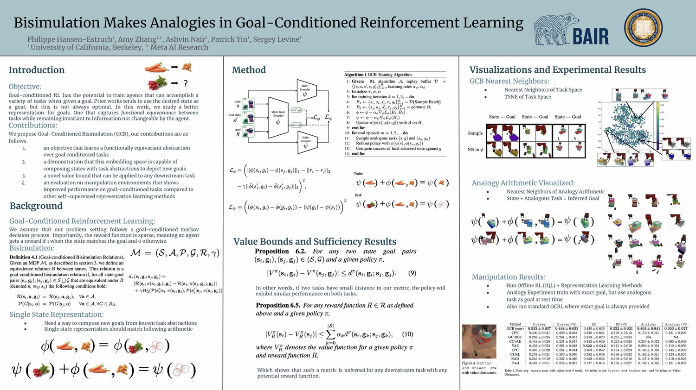
(a) 作者设计的海报。
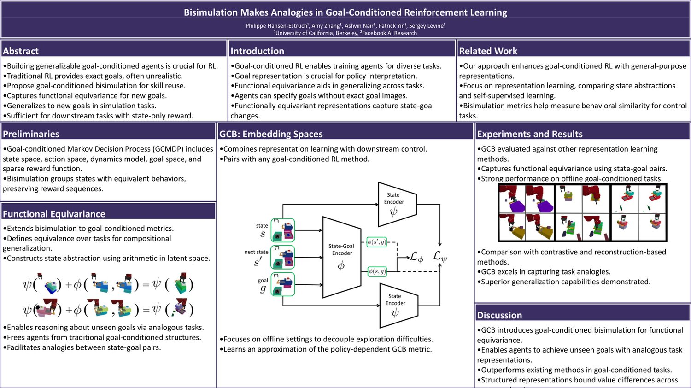
(b) PosterAgent 生成的海报。
图 9：Bisimulation Makes Analogies in Goal-Conditioned Reinforcement Learning 的海报。
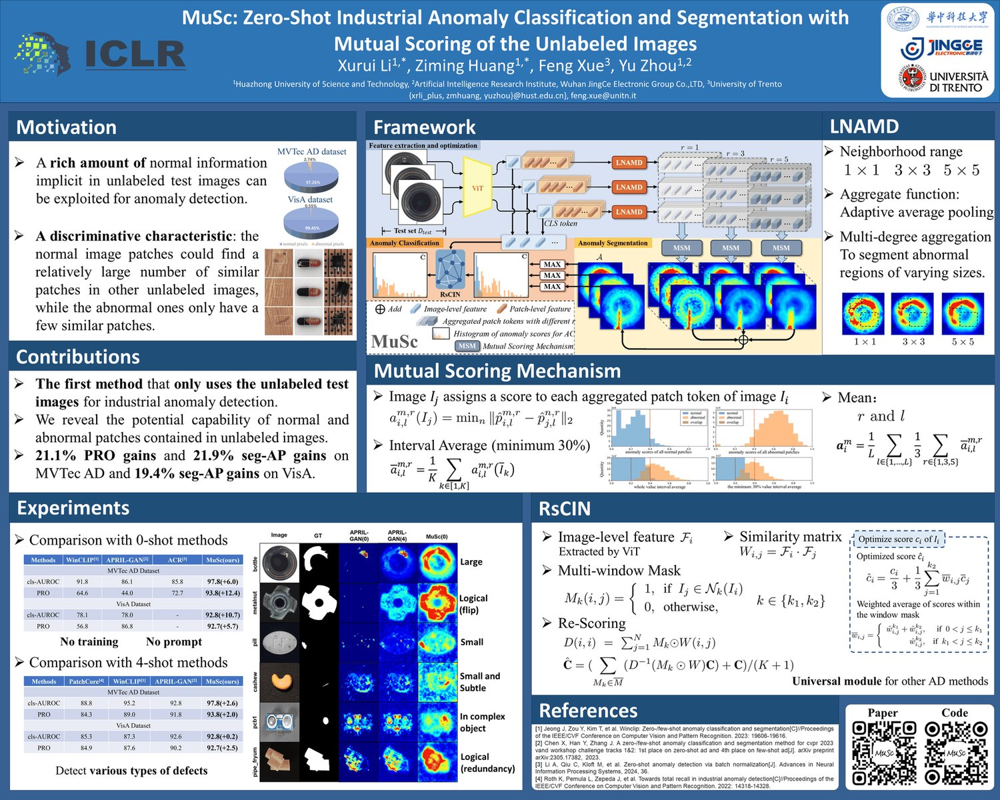
(a) 作者设计的海报。
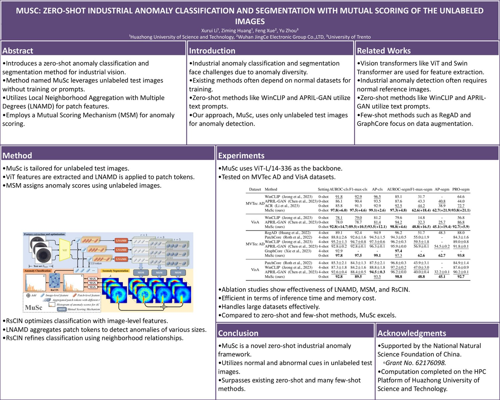
(b) PosterAgent 生成的海报。
图 10：MuSc: Zero-Shot Industrial Anomaly Classification and Segmentation with Mutual Scoring of the Unlabeled Images 的海报。
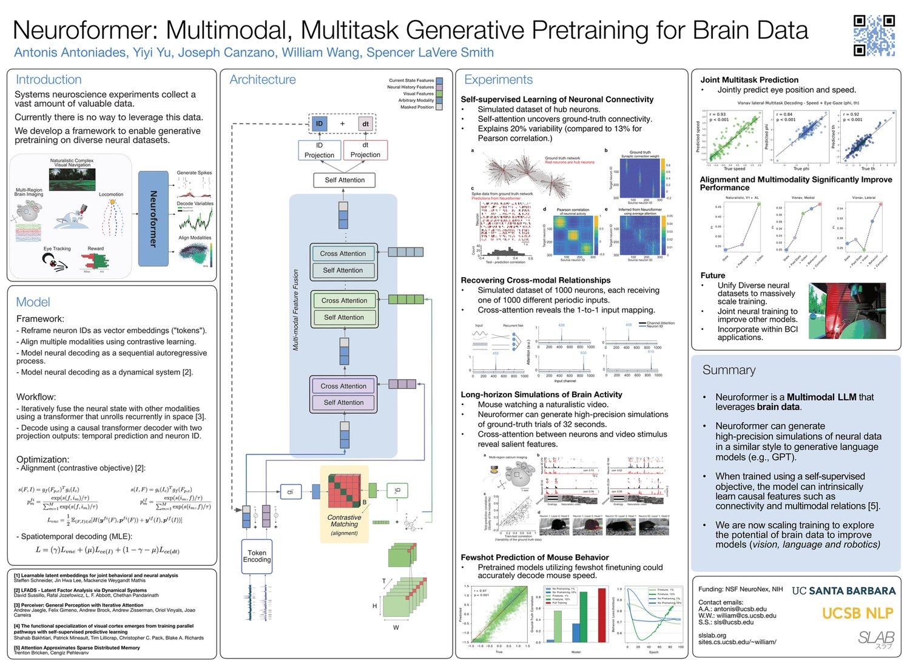
(a) 作者设计的海报。
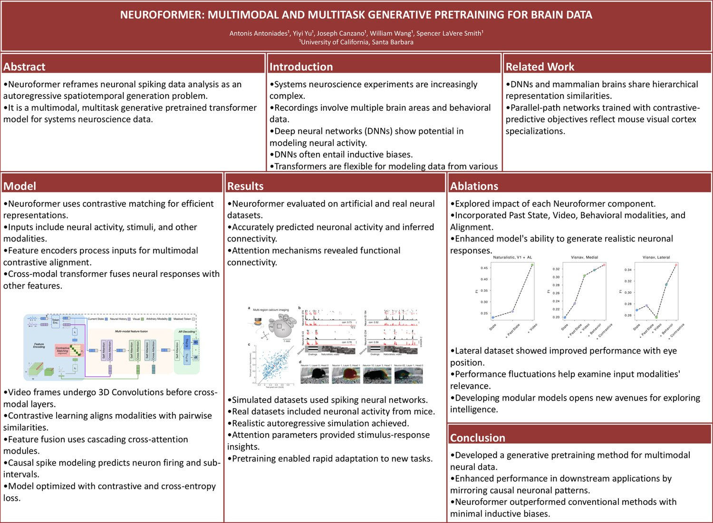
(b) PosterAgent 生成的海报。
图 11：Neuroformer: Multimodal and Multitask Generative Pretraining for Brain Data 的海报。
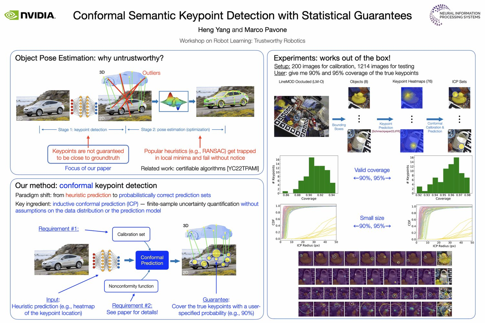
(a) 作者设计的海报。
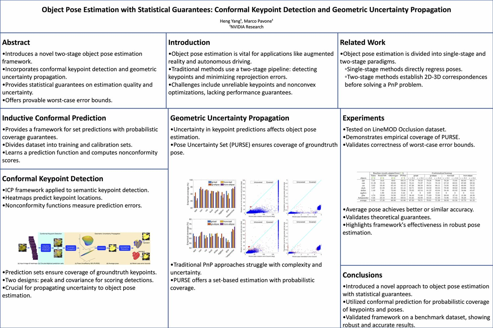
(b) PosterAgent 生成的海报。
图 12：Conformal Semantic Keypoint Detection with Statistical Guarantees 的海报。
(a) 作者设计的海报。
(b) PosterAgent 生成的海报。
图 13：Neural Tangent Kernels for Axis-Aligned Tree Ensembles 的海报。
(a) 作者设计的海报。
(b) PosterAgent 生成的海报。
图 14：Sparse Parameterization for Epitomic Dataset Distillation 的海报。
(a) 作者设计的海报。
(b) PosterAgent 生成的海报。
图 15：Truly Scale-Equivariant Deep Nets with Fourier Layers 的海报。
(a) 作者设计的海报。
(b) PosterAgent 生成的海报。
图 16：Identifying the Context Shift between Test Benchmarks and Production Data 的海报。
We conduct ablation studies to evaluate three key design choices in PosterAgent: (1) the binary-tree layout strategy for layout planning; (2) the inclusion of a commenter module as a visual critic; and (3) the use of in-context examples to enhance the visual perception capabilities of the commenter.
我们开展消融研究，评估 PosterAgent 中的三项关键设计选择：（1）用于版面规划的二叉树布局策略；（2）引入 commenter 模块作为视觉评论者；（3）使用上下文示例来增强 commenter 的视觉感知能力。
We define the following variants:
我们定义以下变体：
Direct: replacing the binary-tree layout with direct layout generation by an LLM;
• Direct：用 LLM 直接生成版面，替代二叉树布局；
Tree: using the binary-tree layout strategy but removing the commenter module;
• Tree：使用二叉树布局策略，但去掉 commenter 模块；
Tree + Commenter: including the commenter module but without in-context examples;
• Tree + Commenter：包含 commenter 模块，但不使用上下文示例；
Tree + Commenter + IC: the full system, with both the commenter and in-context examples.
• Tree + Commenter + IC：完整系统，同时包含 commenter 与上下文示例。
All ablation variants are implemented using PosterAgent-4o, keeping all other components unchanged to isolate the effect of each factor. We visualize and compare results across five randomly selected papers from Paper2Poster, as shown in Figures 17 to 21.
所有消融变体均基于 PosterAgent-4o 实现，其余组件保持不变，以隔离各因素的影响。我们在 Paper2Poster 中随机选取五篇论文进行可视化与比较，结果如图 17 至图 21 所示。
When prompting the LLM to directly generate poster layouts (Direct), the results are often structurally compromised (e.g., Figures 17a–19a), or resemble blog-style layouts that lack visual hierarchy and appeal (Figures 20a,21a). Fine-grained layout components, such as text boxes and figures, are especially challenging to synthesize in this setting: for instance, Figures17a–20a exhibit missing text boxes that leave noticeable blank areas, and Figure 20a fails to preserve the correct aspect ratio of figures.
当提示 LLM 直接生成海报版面时（Direct），结果常常结构受损（如图 17a–19a），或类似博客式版面、缺乏视觉层次与吸引力（图 20a、21a）。在这种设定下合成文本框与图片等细粒度版面组件尤其困难：例如图 17a–20a 出现文本框缺失、留下明显空白，图 20a 也未能保持图片的正确宽高比。
The Tree variant, which omits the commenter module, leads to severe layout defects across all test cases (Figures 17b–21b), primarily manifesting as text overflow—where content spills outside its designated textbox or section panel—resulting in overlaps with other text or visual elements.
去掉 commenter 模块的 Tree 变体在所有测试样例中都导致严重的版面缺陷（图 17b–21b），主要表现为文字溢出——内容溢出了为其指定的文本框或章节面板——进而与其他文本或视觉元素重叠。
Using Tree + Commenter, which includes the commenter but without in-context examples, yields improved results compared to the variant without the commenter, but still exhibits noticeable issues. As shown in Figures 17c,18c,20c, and 21c, some degree of text overflow remains. Furthermore, Figures 19c and 20c highlight substantial unused white space that the commenter fails to flag in the absence of in-context guidance.
使用包含 commenter 但不带上下文示例的 Tree + Commenter，结果优于无 commenter 的变体，但仍存在明显问题。如图 17c、18c、20c、21c 所示，仍有一定程度的文字溢出。此外，图 19c 与 20c 显示存在大量未被利用的空白区域，而 commenter 在缺少上下文引导时未能指出这些问题。
Finally, the full Tree+Commenter+IC system achieves the best results, as detailed throughout the main paper and demonstrated in Fig. 17d,18d,19d,20d,21d.
最后，完整的 Tree+Commenter+IC 系统取得了最佳结果，正文各处均有详述，并在图 17d、18d、19d、20d、21d 中得到展示。
(a) Direct。
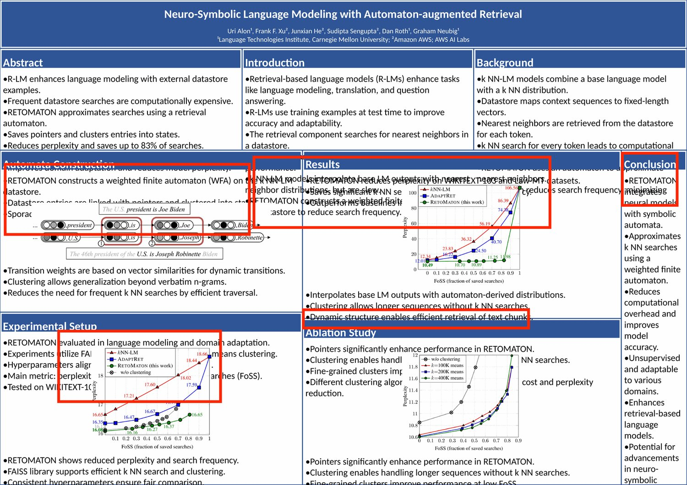
(b) Tree。
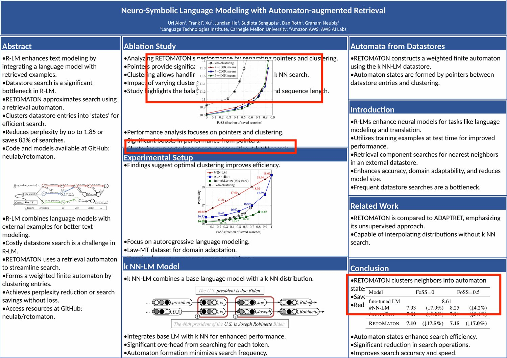
(c) Tree + Commenter。
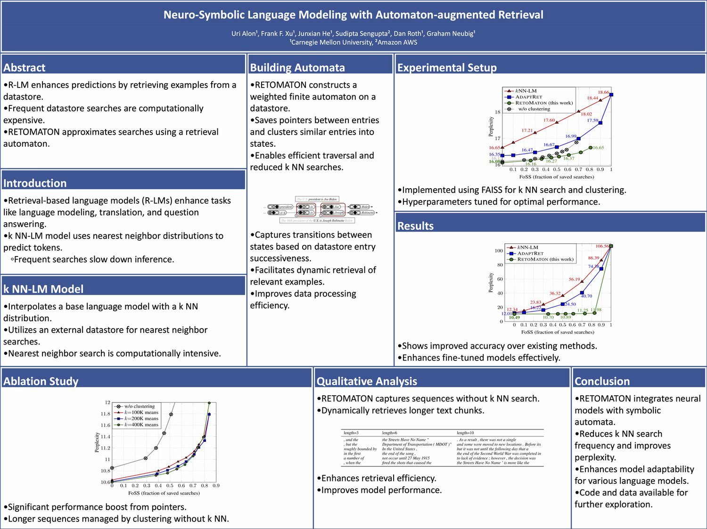
(d) Tree + Commenter + IC。
图 17：在 Neuro-Symbolic Language Modeling with Automaton-augmented Retrieval 上的消融研究。文字溢出区域以红色边界框标出。
(a) Direct。
(b) Tree。
(c) Tree + Commenter。
(d) Tree + Commenter + IC。
图 18：在 Visual Correspondence Hallucination 上的消融研究。文字溢出区域以红色边界框标出。
(a) Direct。
(b) Tree。
(c) Tree + Commenter。
(d) Tree + Commenter + IC。
图 19：在 DARTFormer: Finding The Best Type Of Attention 上的消融研究。文字溢出区域以红色边界框标出，大片空白区域以紫色边界框标出。
(a) Direct。
(b) Tree。
(c) Tree + Commenter。
(d) Tree + Commenter + IC。
图 20：在 CW-ERM: Improving Autonomous Driving Planning with Closed-loop Weighted Empirical Risk Minimization 上的消融研究。文字溢出区域以红色边界框标出，大片空白区域以紫色边界框标出。
(a) Direct。
(b) Tree。
(c) Tree + Commenter。
(d) Tree + Commenter + IC。
图 21：在 DeepJoint: Robust Survival Modelling Under Clinical Presence Shift 上的消融研究。文字溢出区域以红色边界框标出。
We provide a reference for the abbreviations of models used in this paper in Tab. 3.
我们在表 3 中给出本文所用模型缩略语的对照参考。
表 3：缩略语及其全称列表。
In Tab. 4, we evaluate the efficiency of PosterAgent against both direct generation and multi-agent baselines. While 4o-Image achieves the highest efficiency by avoiding multi-turn reasoning, it lacks layout-awareness. PosterAgent-Qwen-2.5-7B strikes a strong balance, significantly reducing token usage and runtime (47.6K, 192.0s) compared to PPTAgent (255.7K, 230.7s), while maintaining output quality. This highlights the challenge, as well as the efficiency issue of Paper2Poster.
表 4 评估了 PosterAgent 相对于直接生成与多智能体基线的效率。4o-Image 由于避免多轮推理而效率最高，却缺乏版面意识。PosterAgent-Qwen-2.5-7B 取得了良好的平衡，相比 PPTAgent（255.7K，230.7s）显著降低了词元用量与运行时间（47.6K，192.0s），同时保持了输出质量。这既凸显了 Paper2Poster 的挑战性，也反映出其效率问题。
| Model | in_t () | out_t () | in_v () | out_v () | total_t () | total_v () | Input Tokens () | Output Tokens () | Total Tokens () | Time (s) | Cost ($) |
| End-to-end methods | |||||||||||
| 4o-HTML | 18.53 | 2.15 | 0 | 0 | 20.67 | 0 | 18.53 | 2.15 | 20.67 | 62.26 | 0.14 |
| Multi-Agent methods | |||||||||||
| OWL-4o | 356.48 | 4.62 | 0 | 0 | 361.00 | 0 | 356.48 | 4.62 | 361.10 | 124.29 | 1.87 |
| PPTAgent-4o | 202.46 | 33.42 | 18.98 | 0.87 | 235.88 | 19.85 | 221.43 | 34.29 | 255.73 | 230.70 | 1.79 |
| PosterAgent variants | |||||||||||
| PosterAgent-4o | 28.85 | 2.95 | 69.25 | 0.05 | 31.80 | 69.30 | 98.10 | 3.00 | 101.10 | 281.55 | 0.55 |
| PosterAgent-Qwen | 29.22 | 3.56 | 14.75 | 0.02 | 32.78 | 14.78 | 43.97 | 3.58 | 47.55 | 124.29 | 0.0045 |
表 4：在文本与视觉词元以及计算时间方面的效率分析。GPT-4o 的价格基于 OpenAI 截至 2025 年 5 月 22 日的 GPT-4o API 定价（输入 5 美元/MTok、输出 20 美元/MTok）。Qwen-2.5-7B（输入 0.04 美元/MTok、输出 0.1 美元/MTok）与 Qwen-2.5-VL-7B（输入与输出均为 0.2 美元/MTok）的价格基于 OpenRouter 于 2025 年 5 月 26 日提供的报价。每列最佳分数加粗，次优加下划线。
While PosterAgent-4o achieves superior quality and token efficiency compared to baselines, its sequential panel-by-panel content generation initially resulted in longer runtime (281.48s on average) compared to OWL-4o (158.97s). To address this efficiency bottleneck, we implemented a parallelized version that generates content for all panels simultaneously, as panels are independent and can be processed concurrently.
尽管 PosterAgent-4o 在质量与词元效率上优于基线，其串行的逐面板内容生成最初导致运行时间偏长（平均 281.48s），长于 OWL-4o（158.97s）。为解决这一效率瓶颈，我们实现了并行版本，同时生成所有面板的内容，因为各面板相互独立、可并发处理。
Table 5 provides a fine-grained breakdown of runtime across six major procedures: (i) PDF parsing, (ii) figure filtering, (iii) outline generation, (iv) layout generation, (v) content generation (panel iteration), and (vi) rendering. The analysis reveals two primary bottlenecks in the original sequential implementation: PDF parsing (81.08s) and content generation (176.69s).
表 5 给出了六个主要环节的运行时间细分：（i）PDF 解析，（ii）图片筛选，（iii）大纲生成，（iv）版面生成，（v）内容生成（面板迭代），（vi）渲染。该分析揭示了原始串行实现中的两处主要瓶颈：PDF 解析（81.08s）与内容生成（176.69s）。
While PDF parsing relies on established off-the-shelf parsers (Docling and Marker) with limited room for optimization, content generation offers significant parallelization opportunities. Our parallelized implementation reduces content generation time from 176.69s to 54.16s—a 69.3% reduction—bringing the overall runtime to 166.80s. This represents a 40.7% improvement over the sequential version and makes PosterAgent-4o-Parallel highly competitive with OWL-4o (166.80s vs. 158.97s), while maintaining superior output quality across all metrics. The small increase in other procedures (Parser, Filter, Outline, Layout) is due to measurement variance and system load, as these steps remain unchanged between versions.
PDF 解析依赖成熟的现成解析器（Docling 与 Marker），优化空间有限；内容生成则具备显著的并行化机会。我们的并行实现把内容生成时间从 176.69s 降至 54.16s——减少了 69.3%——使总运行时间降至 166.80s。相比串行版本提升 40.7%，使 PosterAgent-4o-Parallel 与 OWL-4o（166.80s 对 158.97s）极具竞争力，同时在所有指标上保持更优的输出质量。其他环节（Parser、Filter、Outline、Layout）的小幅增加源于测量波动与系统负载，因为这些步骤在两个版本之间并未改变。
| Model | (i) Parser (s) | (ii) Filter (s) | (iii) Outline (s) | (iv) Layout (s) | (v) Content (s) | (vi) Render (s) | Total (s) |
| OWL-4o (reference) | (no fine-grained breakdown available) | 158.97 | |||||
| PosterAgent-4o (sequential) | 81.08 | 17.42 | 3.47 | 0.15 | 176.69 | 2.67 | 281.48 |
| PosterAgent-4o-Parallel | 87.45 | 18.29 | 4.09 | 0.17 | 54.16 | 2.65 | 166.80 (40.7%) |
表 5：六个主要环节的运行时间细分。结果为在随机抽取的 10 篇论文子集上取平均。并行实现通过并发生成所有面板的内容，使总运行时间减少了 40.7%。
Token consumptions are depicted in Figure 7 and Table 4. Using GPT-4o as the backbone for both the LLM and VLM components, the average cost of generating a single paper with PosterAgent-4o is approximately:
词元消耗如图 7 与表 4 所示。以 GPT-4o 同时作为 LLM 与 VLM 组件的骨干，用 PosterAgent-4o 生成单篇论文海报的平均成本约为：
based on OpenAI’s GPT-4o API pricing as of May 22, 2025.
基于 OpenAI 截至 2025 年 5 月 22 日的 GPT-4o API 定价。
Using Qwen-2.5-7B as the backbone for LLM and Qwen-2.5-VL-7B as VLM, the average cost of generating a single paper with PosterAgent-4o is approximately:
以 Qwen-2.5-7B 作为 LLM 骨干、Qwen-2.5-VL-7B 作为 VLM，用 PosterAgent-4o 生成单篇论文海报的平均成本约为：
based on OpenRouter’s API pricing as of May 26, 2025.
基于 OpenRouter 截至 2025 年 5 月 26 日的 API 定价。
Table 6 compares four PosterAgent variants obtained by crossing two language models (LMs)—GPT-4o and Qwen-2.5-7B—with the same two models used as vision–language backbones (VLMs).
表 6 比较了由两个语言模型（LM）——GPT-4o 与 Qwen-2.5-7B——与同样两个模型作为视觉—语言骨干（VLM）交叉组合得到的四个 PosterAgent 变体。
Overall robustness. All configurations perform similarly. The PaperQuiz metric spans only (Qwen--4o) to (4o--Qwen), a spread approximately , indicating that PosterAgent is largely insensitive to the specific backbone combination.
整体稳健性。所有配置表现相近。PaperQuiz 指标只在 （Qwen--4o）到 （4o--Qwen）之间波动，极差约 ，说明 PosterAgent 对具体的骨干组合基本不敏感。
Open-source competitiveness. The fully open-source stack (Qwen--Qwen) achieves a PaperQuiz score of , trailing the best closed-source variant by merely . Strong performance is therefore attainable without proprietary APIs.
开源竞争力。全开源组合（Qwen--Qwen）的 PaperQuiz 得分为 ，仅比最佳闭源变体低 。因此，无需专有 API 也能获得强劲表现。
Stable multimodal quality. Visual similarity and figure relevance vary by less than across variants, underscoring the stability of our multimodal generation pipeline.
稳定的多模态质量。不同变体之间的视觉相似度与图片相关性差异不足 ，说明我们的多模态生成流程具有稳定性。
LLM vs. VLM trade-off. Holding the LLM fixed, substituting Qwen for the VLM consistently improves PaperQuiz (4o-Qwen: over 4o-4o; Qwen-Qwen: over Qwen-4o). We attribute this to GPT-4o acting as a stricter layout critic, trimming overflow text and modestly reducing information volume. Conversely, the stricter VLM raises aesthetic scores, yielding higher VLM-as-judge ratings (4o-4o: vs. 4o-Qwen: ). The 4o-4o configuration thus offers the best balance between informativeness and visual appeal.
LLM 与 VLM 的权衡。在固定 LLM 的情况下，把 VLM 换成 Qwen 总能提升 PaperQuiz（4o-Qwen 比 4o-4o 高 ；Qwen-Qwen 比 Qwen-4o 高 ）。我们将其归因于 GPT-4o 作为更严格的版面评论者，会裁掉溢出文本并略微减少信息量。反过来，更严格的 VLM 又提升了美学分数，带来更高的 VLM-as-Judge 评分（4o-4o 为 ，4o-Qwen 为 ）。因此 4o-4o 配置在信息量与视觉吸引力之间取得了最佳平衡。
| LLM | VLM | Vis. quality & Txt. coherence | VLM-as-Judge | Density-augmented Score | ||||||
| Visual Similarity | PPL | Figure Relevance | Aesthetic | Information | Overall | V-Avg | I-Avg | Overall | ||
| GPT-4o | GPT-4o | 0.75 | 8.31 | 0.24 | 3.58 | 3.86 | 3.72 | 101.87 | 130.39 | 116.13 |
| GPT-4o | Qwen-2.5-7B | 0.75 | 9.25 | 0.24 | 3.33 | 3.82 | 3.58 | 105.61 | 130.88 | 118.25 |
| Qwen-2.5-7B | GPT-4o | 0.76 | 9.12 | 0.25 | 3.57 | 3.82 | 3.70 | 100.09 | 128.09 | 114.09 |
| Qwen-2.5-7B | Qwen-2.5-7B | 0.75 | 8.81 | 0.24 | 3.50 | 3.83 | 3.66 | 100.35 | 128.94 | 114.65 |
表 6：PosterAgent 变体的消融研究。每列最佳分数加粗，次优加下划线。
To further evaluate the generalizability of PosterAgent, we conducted experiments with two additional backbones: o4-mini and Qwen-2.5-72B.
为进一步评估 PosterAgent 的泛化性，我们用两个额外的骨干进行了实验：o4-mini 与 Qwen-2.5-72B。
Table 7 presents the complete evaluation across all metrics for the new backbones, alongside the original 4o-Image baseline for reference. Table 8 provides detailed PaperQuiz scores broken down by question type (Verbatim vs. Interpretive) and reader model categories (open-source vs. closed-source). Finally, Table 9 offers a concise comparison of the key metrics.
表 7 给出了新骨干在所有指标上的完整评估，并列出原始的 4o-Image 基线作为参照。表 8 按题目类型（原文题与理解性题目）与阅读者模型类别（开源与闭源）细分给出详细的 PaperQuiz 分数。最后，表 9 对关键指标做了简明比较。
Key observations: (i) All PosterAgent variants substantially outperform the 4o-Image baseline across nearly all metrics, with overall VLM-as-Judge scores ranging from 3.56–3.72 vs. 2.33 (+1.23–1.39 absolute, 53–60% relative improvement). (ii) Visual similarity remains high and stable (0.75–0.78) across all backbones, with PosterAgent-Qwen-72B achieving the highest score (0.78). (iii) PosterAgent-o4-mini achieves the highest raw PaperQuiz overall score (61.33) and augmented score (121.91), demonstrating that reasoning models can produce highly informative posters. (iv) Information scores cluster at 3.83–3.87 (vs. 1.77 for baseline), and Aesthetic scores at 3.26–3.58 (vs. 2.90), indicating backbone-insensitive improvements in both informativeness and visual quality.
关键观察：（i）所有 PosterAgent 变体在几乎所有指标上都大幅优于 4o-Image 基线，VLM-as-Judge 总分处于 3.56–3.72 对 2.33 的区间（绝对提升 +1.23–1.39，相对提升 53–60%）。（ii）视觉相似度在所有骨干上都保持在高位且稳定（0.75–0.78），其中 PosterAgent-Qwen-72B 最高（0.78）。（iii）PosterAgent-o4-mini 取得了最高的 PaperQuiz 原始总分（61.33）与增强分数（121.91），说明推理模型能产出信息量很高的海报。（iv）信息分数集中在 3.83–3.87（基线为 1.77），美学分数为 3.26–3.58（基线为 2.90），表明在信息量与视觉质量上的提升对骨干不敏感。
These results confirm that PosterAgent’s multi-agent design generalizes well across different backbone choices, maintaining strong performance with both reasoning closed-source models and larger open-source alternatives.
这些结果证实 PosterAgent 的多智能体设计在不同骨干选择上泛化良好，无论使用具备推理能力的闭源模型还是规模更大的开源替代方案，都能保持强劲表现。
| Model | Vis. quality & Txt. coherence | VLM-as-Judge | ||||||||||
| Vis. Sim. | PPL | Fig. Rel. | Aesthetic score | Information score | Overall | |||||||
| Element | Layout | Engage. | Avg. | Clarity | Content | Logic | Avg. | |||||
| Baseline | ||||||||||||
| 4o-Image | 0.76 | 77.13 | 0.21 | 2.93 | 3.02 | 2.75 | 2.90 | 1.05 | 2.04 | 2.22 | 1.77 | 2.33 |
| PosterAgent with additional backbones | ||||||||||||
| PosterAgent-4o | 0.75 | 8.31 | 0.24 | 3.95 | 3.86 | 2.93 | 3.58 | 4.03 | 3.96 | 3.60 | 3.86 | 3.72 |
| PosterAgent-o4-mini | 0.76 | 14.00 | 0.23 | 3.79 | 3.38 | 2.64 | 3.27 | 3.98 | 3.98 | 3.64 | 3.87 | 3.57 |
| PosterAgent-Qwen-7B | 0.75 | 8.81 | 0.24 | 3.93 | 3.67 | 2.89 | 3.50 | 3.95 | 3.85 | 3.68 | 3.83 | 3.66 |
| PosterAgent-Qwen-72B | 0.78 | 8.81 | 0.25 | 3.76 | 3.39 | 2.63 | 3.26 | 3.88 | 3.96 | 3.74 | 3.86 | 3.56 |
表 7：使用额外骨干的详细评估。所有 PosterAgent 变体都大幅优于 4o-Image 基线。每列最佳分数加粗，次优加下划线。
| Raw Accuracy | Density-Augmented Score | |||||||||
| Model | Verbatim | Interpretive | Overall | V-Avg | I-Avg | Overall | ||||
| open-source | closed-source | V-Avg | open-source | closed-source | I-Avg | |||||
| Baseline | ||||||||||
| 4o-Image | 48.97 | 30.89 | 39.93 | 50.19 | 70.67 | 60.43 | 50.18 | 79.86 | 120.86 | 100.36 |
| PosterAgent with additional backbones | ||||||||||
| PosterAgent-4o | 52.95 | 49.17 | 51.06 | 52.29 | 78.42 | 65.35 | 58.21 | 101.87 | 130.39 | 116.13 |
| PosterAgent-o4-mini | 54.21 | 60.27 | 57.24 | 51.99 | 78.87 | 65.43 | 61.33 | 113.76 | 130.05 | 121.91 |
| PosterAgent-Qwen-7B | 51.81 | 48.79 | 50.30 | 52.57 | 76.66 | 64.62 | 57.46 | 100.35 | 128.94 | 114.65 |
| PosterAgent-Qwen-72B | 53.65 | 54.61 | 54.13 | 52.69 | 78.01 | 65.35 | 59.74 | 107.76 | 130.10 | 118.93 |
表 8：使用额外骨干的 PaperQuiz 评估。PosterAgent-o4-mini 取得最高的总分，所有变体都大幅优于基线。每列最佳分数加粗，次优加下划线。
| Model | Visual Sim | Overall VLM-as-Judge | PaperQuiz Raw Overall | PaperQuiz Aug Overall |
| Baseline | ||||
| 4o-Image | 0.76 | 2.33 | 50.18 | 100.36 |
| PosterAgent with additional backbones | ||||
| PosterAgent-4o | 0.75 | 3.72 | 58.21 | 116.13 |
| PosterAgent-o4-mini | 0.76 | 3.57 | 61.33 | 121.91 |
| PosterAgent-Qwen-7B | 0.75 | 3.66 | 57.46 | 114.65 |
| PosterAgent-Qwen-72B | 0.78 | 3.56 | 59.74 | 118.93 |
表 9：使用额外骨干的关键指标汇总比较。所有 PosterAgent 变体在各指标上表现强劲。每列最佳分数加粗，次优加下划线。
To clarify our design choices, we provide a systematic comparison of different poster generation paradigms in Table 10. PosterAgent adopts a hybrid approach that combines the strengths of multiple paradigms: we generate code for precise layout control (coordinates, sizes, layering), then render to PPTX to obtain visual feedback, which the system uses to iteratively refine both layout and content.
为阐明我们的设计选择，我们在表 10 中对不同海报生成范式做了系统比较。PosterAgent 采用融合多种范式优势的混合方案：先生成代码以实现精确的版面控制（坐标、尺寸、图层），再渲染为 PPTX 以获得视觉反馈，系统据此迭代优化版面与内容。
Coding-only approaches (e.g., direct HTML/code synthesis or general coding agents) offer exact placement and reproducibility but produce artifacts that are cumbersome for users to edit and cannot naturally "see" the rendered result to correct visual issues like text overflow or alignment problems.
纯代码方法（如直接 HTML/代码合成或通用编码智能体）能提供精确定位与可复现性，但产出物对用户而言难以编辑，而且无法自然地「看到」渲染结果，因而无法纠正文字溢出或对齐问题等视觉缺陷。
GUI-only pipelines make editing easy and support feedback from the rendered poster. Still, precise, large-scale adjustments require many low-level operations (e.g., clicking, dragging) and are computationally inefficient for automated generation.
纯 GUI 流程易于编辑，也能从渲染后的海报获得反馈；但精确、大规模的调整需要大量底层操作（如点击、拖拽），在自动化生成中计算效率低下。
Template retrieval can be efficient and produce editable outputs, but it is not true generation from scratch and depends critically on the availability and suitability of templates. For scientific posters, high-quality, non-proprietary, and diverse templates are scarce. Even when strong templates are available, our experiments show that PPTAgent-4o—given six human-designed poster templates with manual selection of the best match—performed noticeably worse than PosterAgent, underscoring the limitation of template dependence for this task.
模板检索可以高效产出可编辑的结果，却并非真正的从零生成，且严重依赖模板的可用性与适配性。对科学海报而言，高质量、非专有且多样的模板十分稀缺。即便有强大模板可用，我们的实验也显示：在给定六套人工设计的海报模板并人工挑选最佳匹配的情况下，PPTAgent-4o 的表现仍明显不如 PosterAgent，凸显了模板依赖在该任务上的局限。
By generating code and iterating with rendered visual feedback in PPTX, PosterAgent inherits precise control, editable outputs, true from-scratch generation, efficient global changes, and feedback-driven refinement—properties we found necessary to meet the dual demands of content accuracy and visual layout quality.
通过生成代码并借助 PPTX 中渲染出的视觉反馈进行迭代，PosterAgent 同时获得了精确控制、可编辑产出、真正的从零生成、高效的全局修改以及反馈驱动的精修——这些特性是我们为满足内容准确性与视觉版面质量的双重要求所必需的。
| Paradigm | Precise Control | Easy User Editing | Generate from Scratch | Uses Visual Feedback | Efficient Generation |
| Coding-only | ✓ | ✗ | ✓ | ✗ | ✓ |
| (e.g., HTML synthesis) | (exact placement) | (code is hard to edit visually) | |||
| GUI-only | ✗ | ✓ | ✓ | ✓ | ✗ |
| (e.g., UI automation) | (fine placement is difficult) | (many fine-grained actions) | |||
| Template retrieval | ✗ | ✓ | ✗ | ✓ | ✓ |
| (e.g., PPTAgent w/ templates) | (constrained by template) | (depends on template pool) | |||
| PosterAgent (hybrid) | ✓ | ✓ | ✓ | ✓ | ✓ |
| (code gen + PPTX render) | (code-based precision) | (editable PPTX output) | (no template required) | (visual-in-the-loop) | (parallelizable) |
表 10：海报生成范式比较。PosterAgent 的混合方案把代码生成（用于精确控制）与 PPTX 渲染（用于视觉反馈与可编辑性）结合起来，实现了全部理想特性：精确控制、易于编辑、从零生成、融入视觉反馈与高效生成。✓ 表示该范式很好地支持该特性；✗ 表示存在明显局限。
To verify the stability and reliability of our VLM-as-Judge evaluation, we conducted five independent runs of the complete evaluation on PosterAgent-4o across the entire dataset (100 samples).
为验证 VLM-as-Judge 评估的稳定性与可靠性，我们在整个数据集（100 个样本）上对 PosterAgent-4o 进行了五次独立完整评估。
Table 11 presents the results across all six fine-grained criteria (three aesthetic and three information dimensions), along with the averaged scores. The results demonstrate exceptional stability: standard deviations are minimal (std 0.024) across all metrics, with the overall average showing particularly low variance (std = 0.005). The 95% confidence intervals are extremely narrow.
表 11 给出了全部六项细粒度准则（三项美学维度与三项信息维度）以及平均分的结果。结果显示出极高的稳定性：所有指标的标准差都极小（std 0.024），总体平均值的方差尤其低（std = 0.005），95% 置信区间非常窄。
Key observations: (i) All metrics exhibit high consistency across runs, with a coefficient of variation 1% for most measures. (ii) The narrow confidence intervals indicate that a single evaluation run provides reliable estimates for model comparison. (iii) The stability validates our VLM-as-Judge approach as a robust automatic evaluation method for poster generation.
关键观察：（i）所有指标在各次运行间表现出高度一致性，多数指标的变异系数 1%。（ii）狭窄的置信区间说明单次评估运行即可为模型比较提供可靠估计。（iii）这种稳定性验证了 VLM-as-Judge 作为海报生成自动评估方法的稳健性。
Given the observed stability, we conclude that single-run evaluations are sufficient for practical model comparison, with periodic multi-run audits recommended to verify continued metric stability.
鉴于所观察到的稳定性，我们得出结论：单次评估足以支撑实用的模型比较，建议辅以周期性的多运行审计，以验证指标稳定性是否持续。
| Run | Aesthetic | Information | Aesthetic | Information | Overall | ||||
| Element | Layout | Engagement | Clarity | Content | Logic | Avg | Avg | Avg | |
| Run 1 | 3.95 | 3.86 | 2.93 | 4.03 | 3.96 | 3.60 | 3.58 | 3.86 | 3.72 |
| Run 2 | 3.95 | 3.90 | 2.96 | 4.02 | 3.96 | 3.59 | 3.60 | 3.86 | 3.73 |
| Run 3 | 3.91 | 3.88 | 2.97 | 4.04 | 3.99 | 3.59 | 3.59 | 3.87 | 3.73 |
| Run 4 | 3.93 | 3.84 | 2.95 | 4.03 | 3.97 | 3.58 | 3.57 | 3.86 | 3.72 |
| Run 5 | 3.93 | 3.85 | 2.93 | 4.01 | 3.95 | 3.64 | 3.57 | 3.87 | 3.72 |
| Mean | 3.934 | 3.866 | 2.948 | 4.026 | 3.966 | 3.600 | 3.582 | 3.864 | 3.724 |
| Std | 0.017 | 0.024 | 0.018 | 0.011 | 0.015 | 0.023 | 0.013 | 0.005 | 0.005 |
| 95% CI | [3.913, | [3.836, | [2.926, | [4.012, | [3.947, | [3.571, | [3.566, | [3.857, | [3.717, |
| 3.955] | 3.896] | 2.970] | 4.040] | 3.985] | 3.629] | 3.598] | 3.871] | 3.731] | |
表 11：PosterAgent-4o 的 VLM-as-Judge 评估五次运行稳健性分析。结果显示出极高的稳定性，所有指标的方差极小（std 0.024）。
We elaborate on the details of all four types of evaluation metrics applied in this study in this section.
本节详述本研究采用的四类评估指标的细节。
Two metrics fall into this type, namely Visual Similarity and Figure Relevance.
这一类包含两项指标，即视觉相似度与图片相关性。
Visual Similarity is computed as the cosine similarity between the CLIP image embeddings of the generated poster and the ground-truth poster . Concretely, letting
视觉相似度计算的是生成海报 与真值海报 的 CLIP 图像嵌入之间的余弦相似度。具体地，令
denote the CLIP image encoder, we set
表示 CLIP 图像编码器，我们令
| (1) |
By operating at the instance level rather than comparing distributional statistics (e.g., FID [heusel2017gans]), this measure directly captures semantic alignment and overall content fidelity between individual poster images.
由于该度量在实例级别运作，而非比较分布统计（如 FID [heusel2017gans]），它直接刻画了单张海报图像之间的语义对齐与整体内容保真度。
Figure Relevance assesses whether each figure in the generated poster is contextually appropriate. For a set of figure crops extracted from and their corresponding section text from the original paper, we compute image and text embeddings
图片相关性评估生成海报中的每张图片是否在语境上恰当。对于 个图片裁剪 （从 中抽取）及其在原论文中对应的章节文本 ，我们计算图像与文本的嵌入
We then define
然后定义
We quantify textual coherence by computing the standard perplexity (PPL) of the poster text under the Llama-2-7b-hf language model. Specifically, let the poster be tokenized into a sequence . The model assigns each token a conditional probability . We then define perplexity as
我们通过在 Llama-2-7b-hf 语言模型下计算海报文本的标准困惑度（PPL）来量化文本连贯性。具体地，设海报被切分为序列 ，模型为每个词元赋予条件概率 ，则困惑度定义为
Lower values of PPL correspond to more predictable and then more coherent text. We employ full-sequence PPL for its simplicity and direct interpretability in capturing overall textual fluency.
PPL 越低对应文本越可预测，因而越连贯。我们采用全序列 PPL，因其简洁直观，能刻画整体的文本流畅度。
Each poster is scored on six criteria by a vision–language model. For each criterion we supply a dedicated prompt in a tcolorbox using the prompt_func style; the model returns:
每张海报由视觉—语言模型按六项准则打分。对每项准则，我们在 tcolorbox 中以 prompt_func 样式提供专用提示；模型返回：
{"reason": "<justification>", "score": <1–5>}
Element Quality. This criterion evaluates the visual clarity, resolution, and stylistic consistency of individual graphic elements (figures, charts, icons).
元素质量。该准则评估单个图形元素（图片、图表、图标）的视觉清晰度、分辨率与风格一致性。
Layout Balance. This criterion assesses the overall arrangement, alignment, and spacing of text and graphics to ensure a coherent and readable poster structure.
版面均衡。该准则评估文字与图形的整体排布、对齐与间距，以保证海报结构连贯可读。
Engagement. This criterion judges how effectively the poster’s design elements—color, typography, and composition—capture and sustain viewer attention.
吸引力。该准则判断海报的设计元素——色彩、字体排印与构图——能否有效吸引并维持观看者的注意。
Clarity. This criterion evaluates sentence-level readability, grammar, and phrasing to ensure the text is polished and error-free.
清晰度。该准则评估句子层面的可读性、语法与措辞，确保文本精炼无误。
Content Completeness. This criterion measures whether all key sections are included and richly detailed, reflecting comprehensive coverage of the paper’s main contributions.
内容完整性。该准则衡量是否包含全部关键章节且细节丰富，反映对论文主要贡献的全面覆盖。
Logical Flow. This criterion examines the coherence and progression of ideas across poster sections, ensuring a seamless narrative from introduction to conclusion.
逻辑流。该准则考察海报各部分之间思想的连贯与推进，确保从引言到结论的叙事顺畅无缝。
For each poster, we record all six criterion scores and compute two aggregated metrics:
对每张海报，我们记录全部六项准则分数并计算两个聚合指标：
| Aesthetic Score | |||
| Information Score |
QA Dataset Curation. Each paper PDF is converted to markdown via our PDF parser. We then prompt o3 to generate 100 multiple-choice questions per paper, where we have 50 verbatim and 50 interpretive questions as follows:
问答数据集构建。每篇论文 PDF 先经我们的 PDF 解析器转换为 Markdown，随后我们提示 o3 为每篇论文生成 100 道多选题，其中 50 道原文题、50 道理解性题目，具体如下：
Verbatim questions (50): directly answerable from the paper text, covering 13 orthogonal content aspects (e.g., objectives, methodology, key results).
• 原文题（50 道）：可直接从论文文本作答，覆盖 13 个相互正交的内容方面（如研究目标、方法、关键结果）。
Interpretive questions (50): requires high-level comprehension beyond verbatim text, spanning 10 conceptual dimensions (e.g., motivation, contribution synthesis, implication analysis).
• 理解性题目（50 道）：需要超越原文文本的高层理解，横跨 10 个概念维度（如研究动机、贡献综合、影响分析）。
The exact prompts that are applied to generate the questions are given below, for verbatim and interpretive questions, respectively.
用于生成上述两类题目的确切提示分别给出如下。
Evaluation Workflow. For each poster image, we query six VLM reader models to answer curated questions. These models include three open-source models (LLaVA-OneVision-Qwen2-7B-ov-hf, Phi-4-multimodal-instruct, and Llama-4-Scout-17B-16E-Instruct) and three closed-source models (o3, GPT-4o mini, and Gemini 2.0 Flash). Their outputs are evaluated according to two enforced rules:
评估流程。对每张海报图像，我们查询六个 VLM 阅读者模型来回答构建好的问题。这些模型包括三个开源模型（LLaVA-OneVision-Qwen2-7B-ov-hf、Phi-4-multimodal-instruct、Llama-4-Scout-17B-16E-Instruct）与三个闭源模型（o3、GPT-4o mini、Gemini 2.0 Flash）。其输出按两条强制规则评判：
No external knowledge. Models must base answers solely on information present in the poster image.
• 不得使用外部知识。模型的作答必须仅基于海报图像中的信息。
Visual citation. Each answer must include a reference to the poster region supporting it (e.g., “See Figure 2 caption”); if no region contains the answer, the model responds “NA.”
• 视觉引用。每个答案都必须引用支持该答案的海报区域（如「见图 2 图注」）；若没有任何区域包含答案，模型则回复「NA」。
Scoring Metrics. Let be the raw accuracy (fraction of correctly answered questions) and the token count of the poster text. We define the density-augmented score
评分指标。设 为原始准确率（答对题目的比例）， 为海报文本的词元数。我们定义密度增强分数为
where is the median text length of ground-truth posters. The density multiplier is capped at 2 to penalize verbosity and reward concise, information-dense designs.
其中 为真值海报文本长度的中位数。密度乘子上限为 2，以惩罚冗长并奖励简洁、信息密集的设计。
Instructions. Each human evaluator follows the instructions as follow,
说明。每位人类评估者遵循如下指示，
You will be given a poster, as well as 6 text files containing the criteria to judge the poster.
• 你将获得一张海报，以及 6 个包含评判准则的文本文件。
You need to read the poster and provide your scores according to the 6 text files’ criteria.
• 你需要阅读海报，并依据这 6 个文本文件中的准则给出评分。
Criteria. The criteria are the same as those outlined in PaperQuiz F.4.
准则。准则与 F.4 节 PaperQuiz 中列出的相同。
Generating a scientific poster requires tight coupling of language understanding, visual synthesis, and spatial layout reasoning. Across the five pipelines we evaluate—4o-Image, 4o-HTML, OWL-4o, PPTAgent, and our proposed PosterAgent—we consistently observe four high-level failure modes: text integrity issues, visual / layout flaws, missing visuals, and overflow issues. Below, we describe each class of error and highlight representative examples.
生成科学海报需要把语言理解、视觉合成与空间版面推理紧密结合。在我们评估的五条流程——4o-Image、4o-HTML、OWL-4o、PPTAgent 以及我们提出的 PosterAgent——中，我们一致观察到四类高层失效模式：文本完整性问题、视觉/版面缺陷、视觉元素缺失与溢出问题。下面描述每一类错误并给出代表性示例。
Legible text is crucial for conveying a paper’s content. In image–only generation (4o-Image), posters often contain garbled or unreadable text (Fig.22a) because pixel-level synthesis struggles with high-resolution typography, underscores the fragility of text rendering when no explicit semantic control is applied. PPTAgent, as a template-based method, exhibits a different variant: placeholders are left intact or partly overwritten (Fig.22b), producing semantically “corrupted” content.
清晰的文字对传达论文内容至关重要。在纯图像生成（4o-Image）中，海报常含有乱码或不可读的文字（图 22a），因为像素级合成难以处理高分辨率的字体排印，这说明在没有显式语义控制时文本渲染十分脆弱。PPTAgent 作为基于模板的方法，呈现出另一种变体：占位符被原样保留或部分覆盖（图 22b），产出语义上「受损」的内容。
Pipelines without robust visual feedback frequently misplace or distort content. 4o-Image outputs can be truncated horizontally or vertically (Fig.23a, 23b) because the generator lacks hard spatial constraints. The same model sometimes hallucinates nonsensical figures (Fig.24a). Even with a predefined template, PPTAgent may insert figures at unusably small scales (Fig.24b), or leave substantial blank regions when text or images are partially generated (Fig.25b). HTML-based agents such as OWL-4o also suffer from large empty areas (Fig. 25a) when their sequential code lacks iterative, visual validation.
缺乏稳健视觉反馈的流程常常错放或扭曲内容。4o-Image 的输出可能被横向或纵向截断（图 23a、23b），因为生成器缺少硬性空间约束；同一模型有时还会幻觉出毫无意义的图片（图 24a）。即便使用预定义模板，PPTAgent 也可能以小到无法使用的尺度插入图片（图 24b），或在文字或图像只生成了一部分时留下大片空白（图 25b）。OWL-4o 这类基于 HTML 的智能体在顺序生成的代码缺少迭代式视觉校验时，同样会出现大面积空白（图 25a）。
Although OWL-4o is, in principle, able to invoke external toolkits for figure extraction, it fails to complete the full retrieval-insert cycle; the resulting posters remain purely textual (Fig. 26a) On the other hand, 4o-HTML 26b) by design is text-only, leading to similar issues.
尽管 OWL-4o 原则上能够调用外部工具包抽取图片，它却无法完成完整的「检索—插入」循环，生成的海报仍是纯文本（图 26a）。另一方面，4o-HTML（图 26b）在设计上就是纯文本的，因而存在类似问题。
Unlike HTML, where nested boxes naturally clip overflow, the PPTX format lacks strict parent–child containment. Consequently, both PPTAgent and PosterAgent sometimes produce text that spills beyond panel boundaries (Fig. 27b, 27a). Among the PosterAgent variants, the problem is relatively more pronounced in the Qwen variant, whose backbone (Qwen2.5-VL-7b) provides weaker visual grounding than GPT-4o, making its visual-feedback loop less reliable.
与 HTML 中嵌套盒子会自然裁剪溢出不同，PPTX 格式缺乏严格的父子包含关系，因此 PPTAgent 与 PosterAgent 有时都会产出血出面板边界的文本（图 27b、27a）。在 PosterAgent 的各变体中，该问题在 Qwen 变体上相对更明显，因为其骨干（Qwen2.5-VL-7b）提供的视觉定位能力弱于 GPT-4o，导致其视觉反馈回路不够可靠。
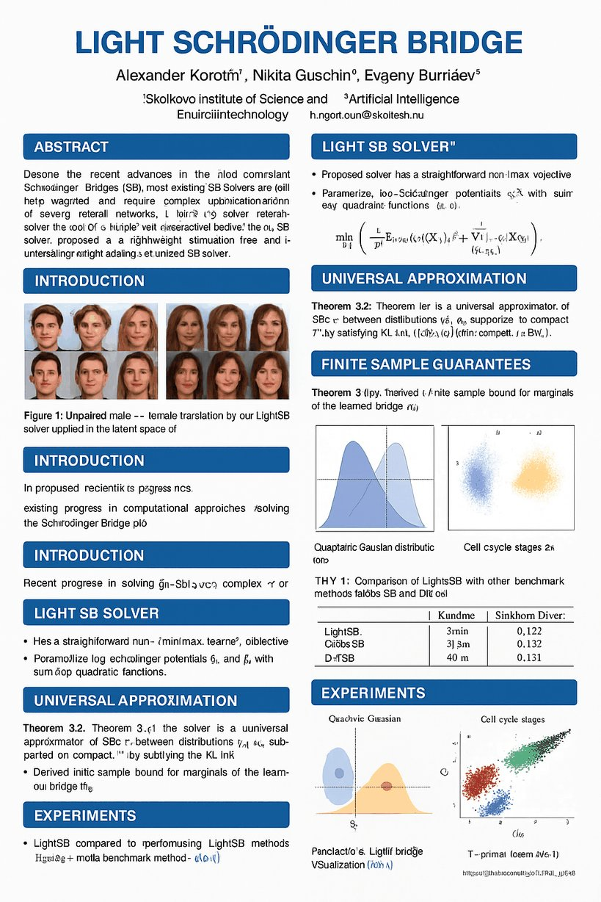
(a) 由 4o-Image 生成的海报，其中出现了大量损坏文本。
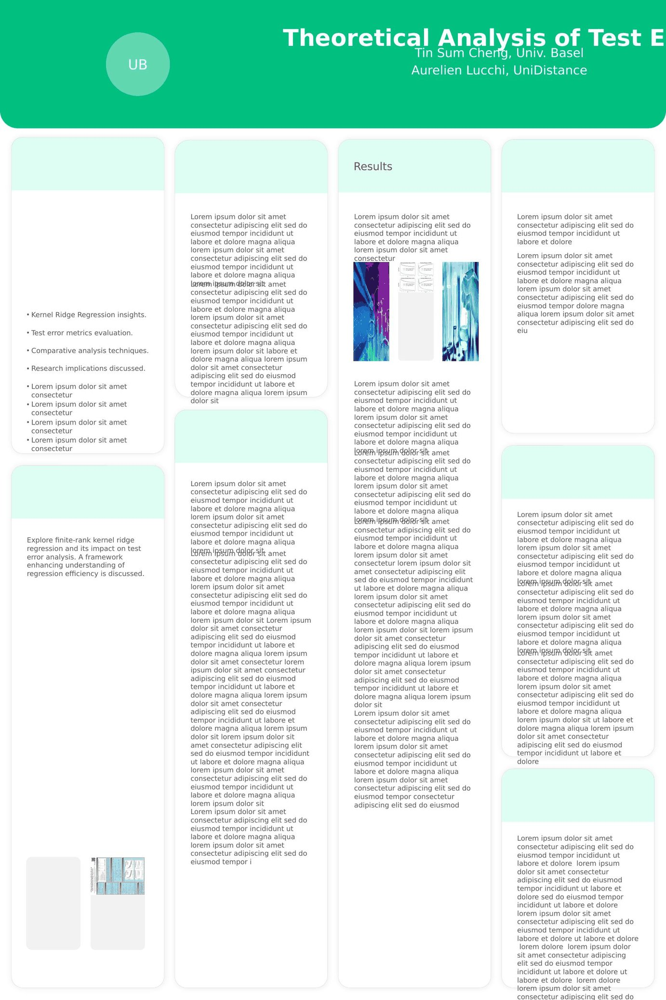
(b) 由 PPTAgent 生成的海报，其中残留了无意义的模板占位文本。
图 22：含损坏文本的海报示例。
(a) 由 4o-Image 生成的海报，因生成不完整而被横向截断。
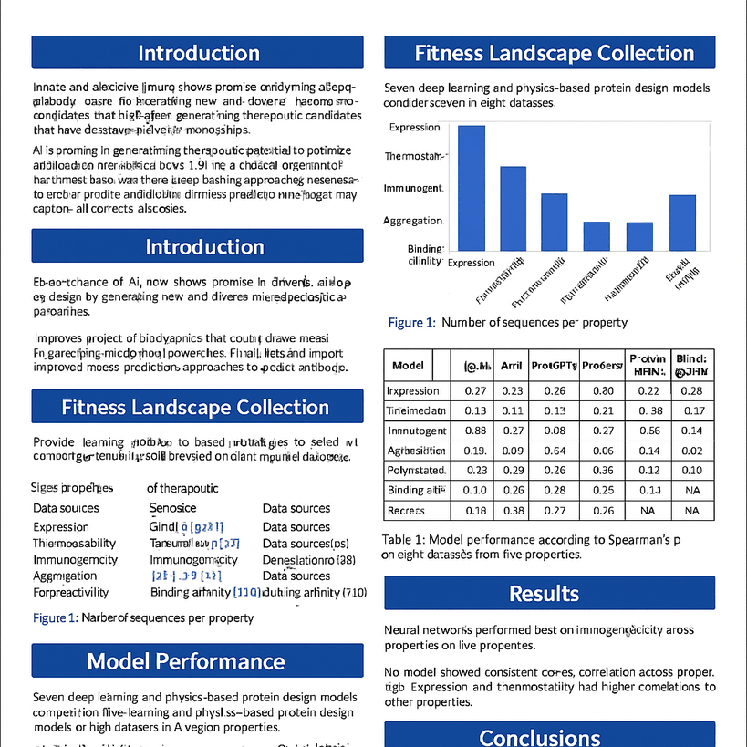
(b) 由 4o-Image 生成的海报，因生成不完整而被纵向截断。
图 23：被截断的海报示例。
(a) 由 4o-Image 生成的海报，其中一张图片分辨率低、视觉损坏且难以辨认。
(b) 由 PPTAgent 生成的海报，其中图片渲染得过小而无法辨认。
图 24：图片模糊不清的海报示例。
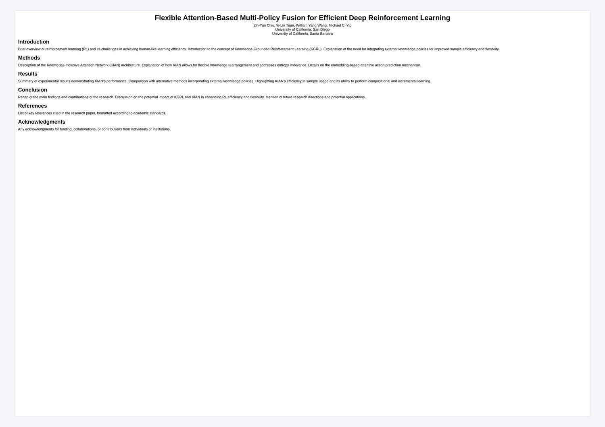
(a) 由 OWL-4o 生成的海报，海报上存在大片空白。
(b) 由 PPTAgent 生成的海报，海报上存在大片空白。
图 25：存在大片空白的海报示例。
(a) 由 OWL-4o 生成的海报，海报中未插入任何图片。
(b) 由 4o-HTML 生成的海报，海报中未插入任何图片。
图 26：不含图片的海报示例。
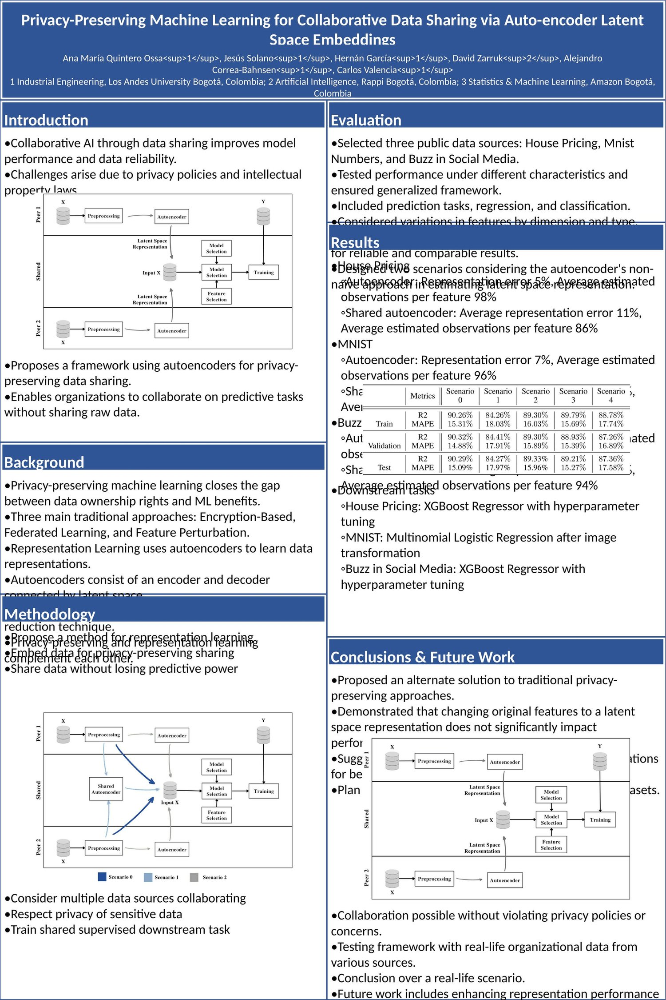
(a) 由 PosterAgent-Qwen 生成的海报，其中文字溢出文本框。
(b) 由 PPTAgent 生成的海报，其中文字溢出文本框。
图 27：文字溢出的海报示例。
We exhibit the prompt templates used to generate baselines: 4o-Image, 4o-HTML, and OWL-4o.
我们展示用于生成基线的提示模板：4o-Image、4o-HTML 与 OWL-4o。
We exhibit prompt templates used for parser: (1) The LLM summarization prompt; (2) The figure filtering prompt.
我们展示用于 parser 的提示模板：（1）LLM 摘要提示；（2）图片筛选提示。
We present the prompts used by the planner module, covering three components: (1) the asset matching prompt; (2) the painter prompt; and (3) the commenter prompt.
我们给出 planner 模块使用的提示，涵盖三个组成部分：（1）素材匹配提示；（2）painter 提示；（3）commenter 提示。
In Fig. 28, we illustrate failure cases of Stable Diffusion Ultra [28]. We found that diffusion models suffer from the issues listed below and remain far from adequate for academic poster generation: (i) Severely inaccurate text rendering – Generated text often appears blurry, misspelled, or semantically incoherent, failing to meet title, body, and caption requirements. (ii) Unpredictable layouts – Models cannot reliably partition the page or align content blocks, resulting in a disorganized visual hierarchy. (iii) Inconsistent styling – Fonts sizes, spacing lack controllable parameters, making it impossible to conform to template guidelines.
图 28 展示了 Stable Diffusion Ultra [28] 的失效案例。我们发现扩散模型存在如下问题，远不足以胜任学术海报生成：（i）文本渲染严重不准确——生成的文字常常模糊、拼写错误或语义不连贯，无法满足标题、正文与图注的要求；（ii）版面不可预测——模型无法可靠地划分页面或对齐内容块，导致视觉层次混乱；（iii）风格不一致——字号、间距缺少可控参数，因而无法遵循模板规范。
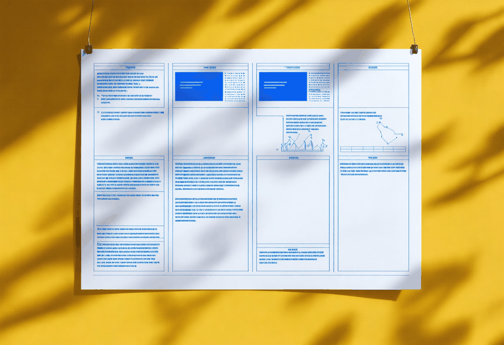
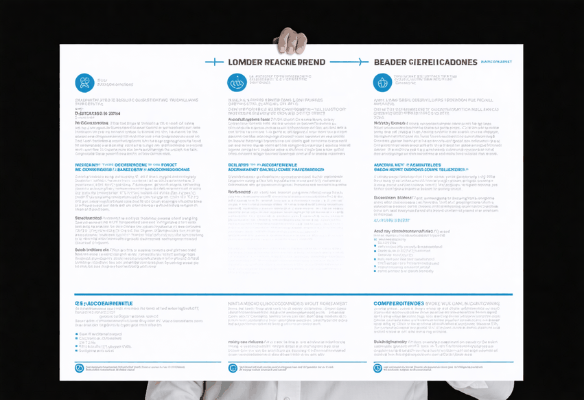
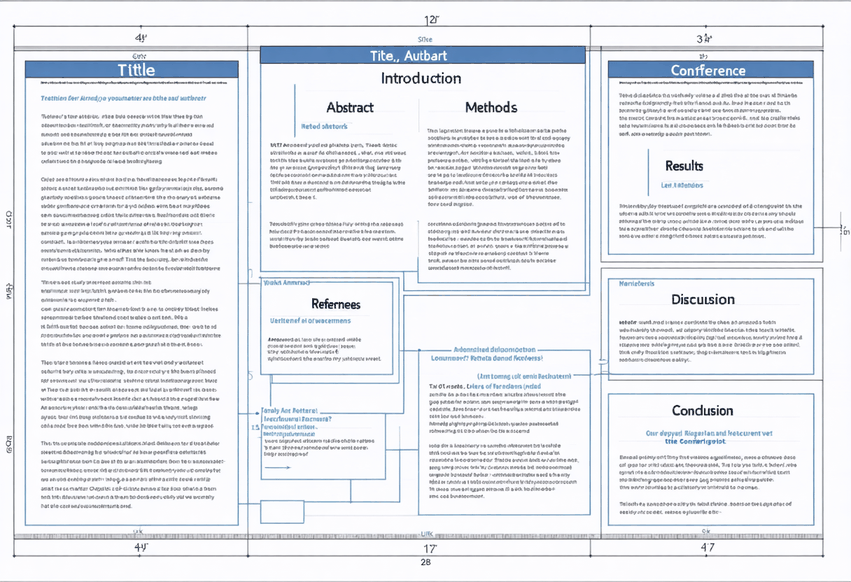
图 28：Stable Diffusion Ultra 模型 [28] 的失败生成示例。
In Fig. 29, we illustrate the in-context references used by our commenter during panel refinement to avoid undesirable cases such as “overflow,” “too blank,”. These examples are highlighted by a red box as a visual prompt.
图 29 展示了我们的 commenter 在面板精修中使用的上下文参考，用于避免「溢出」「过于空白」等不理想情形。这些示例以红框标出，作为视觉提示。
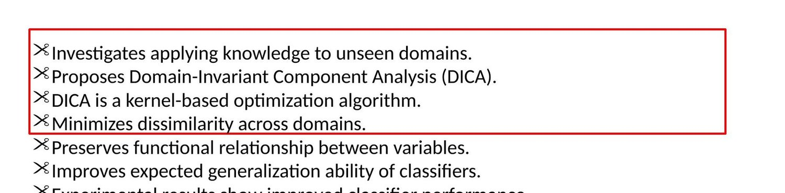
(a) 负例
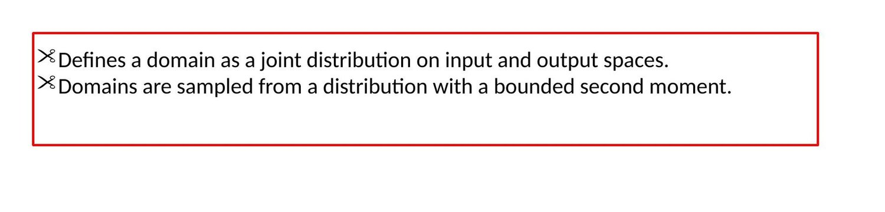
(b) 正例
图 29：上下文参考有助于 commenter 所用的 VLM 更好地判断当前面板是否落入某种失效情形。